Chapter 3: The Cell¶
Introduction¶
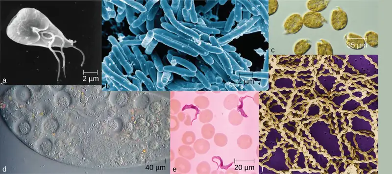
Life takes many forms, from giant redwood trees towering hundreds of feet in the air to the tiniest known microbes, which measure only a few billionths of a meter. Humans have long pondered life’s origins and debated the defining characteristics of life, but our understanding of these concepts has changed radically since the invention of the microscope. In the 17th century, observations of microscopic life led to the development of the cell theory: the idea that the fundamental unit of life is the cell, that all organisms contain at least one cell, and that cells only come from other cells.
Despite sharing certain characteristics, cells may vary significantly. The two main types of cells are prokaryotic cells (lacking a nucleus) and eukaryotic cells (containing a well-organized, membrane-bound nucleus). Each type of cell exhibits remarkable variety in structure, function, and metabolic activity (Figure 3.1). This chapter will focus on the historical discoveries that have shaped our current understanding of microbes, including their origins and their role in human disease. We will then explore the distinguishing structures found in prokaryotic and eukaryotic cells.
3.1 Spontaneous Generation¶
Learning Objectives
By the end of this section, you will be able to:
- Explain the theory of spontaneous generation and why people once accepted it as an explanation for the existence of certain types of organisms
- Explain how certain individuals (van Helmont, Redi, Needham, Spallanzani, and Pasteur) tried to prove or disprove spontaneous generation
Clinical Focus: Part 1
Barbara is a 19-year-old college student living in the dormitory. In January, she came down with a sore throat, headache, mild fever, chills, and a violent but unproductive (i.e., no mucus) cough. To treat these symptoms, Barbara began taking an over-the-counter cold medication, which did not seem to work. In fact, over the next few days, while some of Barbara’s symptoms began to resolve, her cough and fever persisted, and she felt very tired and weak.
- What types of respiratory disease may be responsible?
Jump to the next Clinical Focus box
Humans have been asking for millennia: Where does new life come from? Religion, philosophy, and science have all wrestled with this question. One of the oldest explanations was the theory of spontaneous generation, which can be traced back to the ancient Greeks and was widely accepted through the Middle Ages.
The Theory of Spontaneous Generation¶
The Greek philosopher Aristotle (384–322 BC) was one of the earliest recorded scholars to articulate the theory of spontaneous generation, the notion that life can arise from nonliving matter. Aristotle proposed that life arose from nonliving material if the material contained pneuma (“spirit” or “breath”). As evidence, he noted several instances of the appearance of animals from environments previously devoid of such animals, such as the seemingly sudden appearance of fish in a new puddle of water.1
This theory persisted into the 17th century, when scientists undertook additional experimentation to support or disprove it. By this time, the proponents of the theory cited how frogs simply seem to appear along the muddy banks of the Nile River in Egypt during the annual flooding. Others observed that mice simply appeared among grain stored in barns with thatched roofs. When the roof leaked and the grain molded, mice appeared. Jan Baptista van Helmont, a 17th century Flemish scientist, proposed that mice could arise from rags and wheat kernels left in an open container for 3 weeks. In reality, such habitats provided ideal food sources and shelter for mouse populations to flourish.
However, one of van Helmont’s contemporaries, Italian physician Francesco Redi (1626–1697), performed an experiment in 1668 that was one of the first to refute the idea that maggots (the larvae of flies) spontaneously generate on meat left out in the open air. He predicted that preventing flies from having direct contact with the meat would also prevent the appearance of maggots. Redi left meat in each of six containers (Figure 3.2). Two were open to the air, two were covered with gauze, and two were tightly sealed. His hypothesis was supported when maggots developed in the uncovered jars, but no maggots appeared in either the gauze-covered or the tightly sealed jars. He concluded that maggots could only form when flies were allowed to lay eggs in the meat, and that the maggots were the offspring of flies, not the product of spontaneous generation.
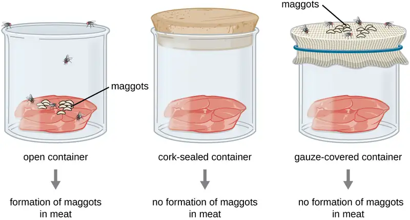
In 1745, John Needham (1713–1781) published a report of his own experiments, in which he briefly boiled broth infused with plant or animal matter, hoping to kill all preexisting microbes.2 He then sealed the flasks. After a few days, Needham observed that the broth had become cloudy and a single drop contained numerous microscopic creatures. He argued that the new microbes must have arisen spontaneously. In reality, however, he likely did not boil the broth enough to kill all preexisting microbes.
Lazzaro Spallanzani (1729–1799) did not agree with Needham’s conclusions, however, and performed hundreds of carefully executed experiments using heated broth.3 As in Needham’s experiment, broth in sealed jars and unsealed jars was infused with plant and animal matter. Spallanzani’s results contradicted the findings of Needham: Heated but sealed flasks remained clear, without any signs of spontaneous growth, unless the flasks were subsequently opened to the air. This suggested that microbes were introduced into these flasks from the air. In response to Spallanzani’s findings, Needham argued that life originates from a “life force” that was destroyed during Spallanzani’s extended boiling. Any subsequent sealing of the flasks then prevented new life force from entering and causing spontaneous generation (Figure 3.3).
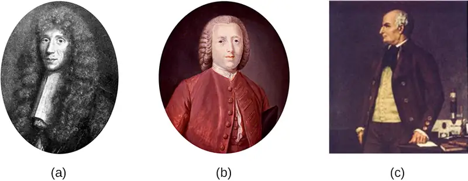
Check Your Understanding
- Describe the theory of spontaneous generation and some of the arguments used to support it.
- Explain how the experiments of Redi and Spallanzani challenged the theory of spontaneous generation.
Disproving Spontaneous Generation¶
The debate over spontaneous generation continued well into the 19th century, with scientists serving as proponents of both sides. To settle the debate, the Paris Academy of Sciences offered a prize for resolution of the problem. Louis Pasteur, a prominent French chemist who had been studying microbial fermentation and the causes of wine spoilage, accepted the challenge. In 1858, Pasteur filtered air through a gun-cotton filter and, upon microscopic examination of the cotton, found it full of microorganisms, suggesting that the exposure of a broth to air was not introducing a “life force” to the broth but rather airborne microorganisms.
Later, Pasteur made a series of flasks with long, twisted necks (“swan-neck” flasks), in which he boiled broth to sterilize it (Figure 3.4). His design allowed air inside the flasks to be exchanged with air from the outside, but prevented the introduction of any airborne microorganisms, which would get caught in the twists and bends of the flasks’ necks. If a life force besides the airborne microorganisms were responsible for microbial growth within the sterilized flasks, it would have access to the broth, whereas the microorganisms would not. He correctly predicted that sterilized broth in his swan-neck flasks would remain sterile as long as the swan necks remained intact. However, should the necks be broken, microorganisms would be introduced, contaminating the flasks and allowing microbial growth within the broth.
Pasteur’s set of experiments irrefutably disproved the theory of spontaneous generation and earned him the prestigious Alhumbert Prize from the Paris Academy of Sciences in 1862. In a subsequent lecture in 1864, Pasteur articulated “Omne vivum ex vivo” (“Life only comes from life”). In this lecture, Pasteur recounted his famous swan-neck flask experiment, stating that “…life is a germ and a germ is life. Never will the doctrine of spontaneous generation recover from the mortal blow of this simple experiment.”4 To Pasteur’s credit, it never has.
![a) Photo of Louis Pasteur b) Photo of Pasteur’s flask – a round flask that is only opened to the outside through a long S-shaped tube. c) A drawing of Pasteur’s experiment. The top diagram shows the swan-neck flask from (b) containing broth that is being boiled to kill microorganisms in the broth. Dust, particles, and bacteria settle in the bend of the flask. After the boiling process the cooled flask remains sterile because the curve of the bend of the flask prevents bacteria and particles in air from entering the main reservoir and contaminating the broth. So, no contamination occurs. The bottom diagram shows the same flask being boiled. Next, the swan-neck is removed and the flask is opened to the environment. When the neck of the flask is broken off, bacteria reach the sterile broth and organism growth occurs. This is seen as cloudiness in the broth.](img/osc-microbio-03-01-pasteur.webp)
Check Your Understanding
- How did Pasteur’s experimental design allow air, but not microbes, to enter, and why was this important?
- What was the control group in Pasteur’s experiment and what did it show?
3.2 Foundations of Modern Cell Theory¶
Learning Objectives
By the end of this section, you will be able to:
- Explain the key points of cell theory and the individual contributions of Hooke, Schleiden, Schwann, Remak, and Virchow
- Explain the key points of endosymbiotic theory and cite the evidence that supports this concept
- Explain the contributions of Semmelweis, Snow, Pasteur, Lister, and Koch to the development of germ theory
While some scientists were arguing over the theory of spontaneous generation, other scientists were making discoveries leading to a better understanding of what we now call the cell theory. Modern cell theory has two basic tenets:
- All cells only come from other cells (the principle of biogenesis).
- Cells are the fundamental units of organisms.
Today, these tenets are fundamental to our understanding of life on earth. However, modern cell theory grew out of the collective work of many scientists.
The Origins of Cell Theory¶
The English scientist Robert Hooke first used the term “cells” in 1665 to describe the small chambers within cork that he observed under a microscope of his own design. To Hooke, thin sections of cork resembled “Honey-comb,” or “small Boxes or Bladders of Air.” He noted that each “Cavern, Bubble, or Cell” was distinct from the others (Figure 3.5). At the time, Hooke was not aware that the cork cells were long dead and, therefore, lacked the internal structures found within living cells.
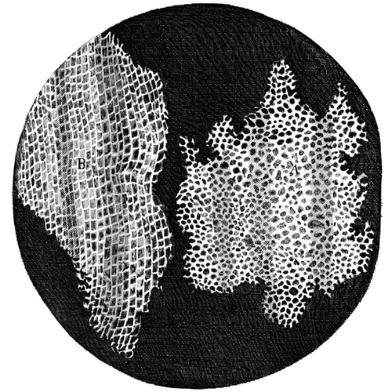
Despite Hooke’s early description of cells, their significance as the fundamental unit of life was not yet recognized. Nearly 200 years later, in 1838, Matthias Schleiden (1804–1881), a German botanist who made extensive microscopic observations of plant tissues, described them as being composed of cells. Visualizing plant cells was relatively easy because plant cells are clearly separated by their thick cell walls. Schleiden believed that cells formed through crystallization, rather than cell division.
Theodor Schwann (1810–1882), a noted German physiologist, made similar microscopic observations of animal tissue. In 1839, after a conversation with Schleiden, Schwann realized that similarities existed between plant and animal tissues. This laid the foundation for the idea that cells are the fundamental components of plants and animals.
In the 1850s, two Polish scientists living in Germany pushed this idea further, culminating in what we recognize today as the modern cell theory. In 1852, Robert Remak (1815–1865), a prominent neurologist and embryologist, published convincing evidence that cells are derived from other cells as a result of cell division. However, this idea was questioned by many in the scientific community. Three years later, Rudolf Virchow (1821–1902), a well-respected pathologist, published an editorial essay entitled “Cellular Pathology,” which popularized the concept of cell theory using the Latin phrase omnis cellula a cellula (“all cells arise from cells”), which is essentially the second tenet of modern cell theory.5 Given the similarity of Virchow’s work to Remak’s, there is some controversy as to which scientist should receive credit for articulating cell theory. See the following Eye on Ethics feature for more about this controversy.
Eye on Ethics: Science and Plagiarism
Rudolf Virchow, a prominent, Polish-born, German scientist, is often remembered as the “Father of Pathology.” Well known for innovative approaches, he was one of the first to determine the causes of various diseases by examining their effects on tissues and organs. He was also among the first to use animals in his research and, as a result of his work, he was the first to name numerous diseases and created many other medical terms. Over the course of his career, he published more than 2,000 papers and headed various important medical facilities, including the Charité – Universitätsmedizin Berlin, a prominent Berlin hospital and medical school. But he is, perhaps, best remembered for his 1855 editorial essay titled “Cellular Pathology,” published in Archiv für Pathologische Anatomie und Physiologie, a journal that Virchow himself cofounded and still exists today.
Despite his significant scientific legacy, there is some controversy regarding this essay, in which Virchow proposed the central tenet of modern cell theory—that all cells arise from other cells. Robert Remak, a former colleague who worked in the same laboratory as Virchow at the University of Berlin, had published the same idea 3 years before. Though it appears Virchow was familiar with Remak’s work, he neglected to credit Remak’s ideas in his essay. When Remak wrote a letter to Virchow pointing out similarities between Virchow’s ideas and his own, Virchow was dismissive. In 1858, in the preface to one of his books, Virchow wrote that his 1855 publication was just an editorial piece, not a scientific paper, and thus there was no need to cite Remak’s work.
By today’s standards, Virchow’s editorial piece would certainly be considered an act of plagiarism, since he presented Remak’s ideas as his own. However, in the 19th century, standards for academic integrity were much less clear. Virchow’s strong reputation, coupled with the fact that Remak was a Jew in a somewhat anti-Semitic political climate, shielded him from any significant repercussions. Today, the process of peer review and the ease of access to the scientific literature help discourage plagiarism. Although scientists are still motivated to publish original ideas that advance scientific knowledge, those who would consider plagiarizing are well aware of the serious consequences.
In academia, plagiarism represents the theft of both individual thought and research—an offense that can destroy reputations and end careers.6 7 8 9
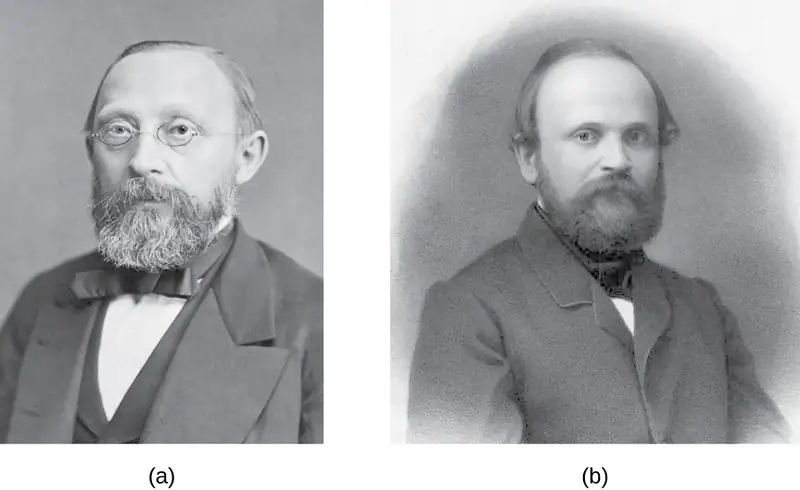
Check Your Understanding
- What are the key points of the cell theory?
- What contributions did Rudolf Virchow and Robert Remak make to the development of the cell theory?
Endosymbiotic Theory¶
As scientists were making progress toward understanding the role of cells in plant and animal tissues, others were examining the structures within the cells themselves. In 1831, Scottish botanist Robert Brown (1773–1858) was the first to describe observations of nuclei, which he observed in plant cells. Then, in the early 1880s, German botanist Andreas Schimper (1856–1901) was the first to describe the chloroplasts of plant cells, identifying their role in starch formation during photosynthesis and noting that they divided independent of the nucleus.
Based upon the chloroplasts’ ability to reproduce independently, Russian botanist Konstantin Mereschkowski (1855–1921) suggested in 1905 that chloroplasts may have originated from ancestral photosynthetic bacteria living symbiotically inside a eukaryotic cell. He proposed a similar origin for the nucleus of plant cells. This was the first articulation of the endosymbiotic hypothesis, and would explain how eukaryotic cells evolved from ancestral bacteria.
Mereschkowski’s endosymbiotic hypothesis was furthered by American anatomist Ivan Wallin (1883–1969), who began to experimentally examine the similarities between mitochondria, chloroplasts, and bacteria—in other words, to put the endosymbiotic hypothesis to the test using objective investigation. Wallin published a series of papers in the 1920s supporting the endosymbiotic hypothesis, including a 1926 publication co-authored with Mereschkowski. Wallin claimed he could culture mitochondria outside of their eukaryotic host cells. Many scientists dismissed his cultures of mitochondria as resulting from bacterial contamination. Modern genome sequencing work supports the dissenting scientists by showing that much of the genome of mitochondria had been transferred to the host cell’s nucleus, preventing the mitochondria from being able to live on their own.10 11
Wallin’s ideas regarding the endosymbiotic hypothesis were largely ignored for the next 50 years because scientists were unaware that these organelles contained their own DNA. However, with the discovery of mitochondrial and chloroplast DNA in the 1960s, the endosymbiotic hypothesis was resurrected. Lynn Margulis (1938–2011), an American geneticist, published her ideas regarding the endosymbiotic hypothesis of the origins of mitochondria and chloroplasts in 1967.12 In the decade leading up to her publication, advances in microscopy had allowed scientists to differentiate prokaryotic cells from eukaryotic cells. In her publication, Margulis reviewed the literature and argued that the eukaryotic organelles such as mitochondria and chloroplasts are of prokaryotic origin. She presented a growing body of microscopic, genetic, molecular biology, fossil, and geological data to support her claims.
Again, this hypothesis was not initially popular, but mounting genetic evidence due to the advent of DNA sequencing supported the endosymbiotic theory, which is now defined as the theory that mitochondria and chloroplasts arose as a result of prokaryotic cells establishing a symbiotic relationship within a eukaryotic host (Figure 3.7). With Margulis’ initial endosymbiotic theory gaining wide acceptance, she expanded on the theory in her 1981 book Symbiosis in Cell Evolution. In it, she explains how endosymbiosis is a major driving factor in the evolution of organisms. More recent genetic sequencing and phylogenetic analysis show that mitochondrial DNA and chloroplast DNA are highly related to their bacterial counterparts, both in DNA sequence and chromosome structure. However, mitochondrial DNA and chloroplast DNA are reduced compared with nuclear DNA because many of the genes have moved from the organelles into the host cell’s nucleus. Additionally, mitochondrial and chloroplast ribosomes are structurally similar to bacterial ribosomes, rather than to the eukaryotic ribosomes of their hosts. Last, the binary fission of these organelles strongly resembles the binary fission of bacteria, as compared with mitosis performed by eukaryotic cells. Since Margulis’ original proposal, scientists have observed several examples of bacterial endosymbionts in modern-day eukaryotic cells. Examples include the endosymbiotic bacteria found within the guts of certain insects, such as cockroaches,13 and photosynthetic bacteria-like organelles found in protists.14
![Diagram of the endosymbiotic theory. Step 1 shows a cell labeled proto-eukaryote; the cell contains an outer membrane and DNA inside. The text reads: infoldings in the plasm amembrane of an ancestral cell gave rise to endomembrane components, including a nucleus and endoplasmic reticulum. The cell now contains DNA within a membrane (the nucleus). Outside are many folds labeled endoplasmic reticulum. Step 2 reads: In a first endosymbiotic event, the ancestral eukaryote consumed aerobic bacteria that evolved into mitochondria. The cell how shows a small oval entering the larger cell; the small oval is labeled aerobic bacterium. Once the small oval is in the cell, it is now labeled mitochondrion. The larger cell is now labeled modern heterotrophic eukaryote. Step 3 reads: in a second endosymbiotic event, the early eukaryote consumed photosynthetic bacteria that evolved into chloroplast. The cell is shown engulfing another small oval labeled photosynthetic bacterium. Once the oval is inside the larger cell is now labeled modern photosynthetic eukaryote.](img/osc-microbio-03-02-endosymbio.webp)
Check Your Understanding
- What does the modern endosymbiotic theory state?
- What evidence supports the endosymbiotic theory?
The Germ Theory of Disease¶
Prior to the discovery of microbes during the 17th century, other theories circulated about the origins of disease. For example, the ancient Greeks proposed the miasma theory, which held that disease originated from particles emanating from decomposing matter, such as that in sewage or cesspits. Such particles infected humans in close proximity to the rotting material. Diseases including the Black Death, which ravaged Europe’s population during the Middle Ages, were thought to have originated in this way. In the 11th Century, Persian physician Ibn Sina (sometimes referred to as Avicenna) proposed that tuberculosis was likely spread by people's breath when in close proximity. Arab physician Ibn Zuhr, writing in about 1155, documented that the common skin condition scabies was caused by tiny mites that bored into the skin. Though scabies mites are about half a millimeter long (and therefore not technically microscopic) and their skin tunnels are often visible, Ibn Zuhr's discovery gave more evidence that unseen substances or creatures caused diseases.
In 1546, Italian physician Girolamo Fracastoro proposed, in his essay De Contagione et Contagiosis Morbis, that seed-like spores may be transferred between individuals through direct contact, exposure to contaminated clothing, or through the air. We now recognize Fracastoro as an early proponent of the germ theory of disease, which states that diseases may result from microbial infection. However, in the 16th century, Fracastoro’s ideas were not widely accepted and would be largely forgotten until the 19th century.
In 1847, Hungarian obstetrician Ignaz Semmelweis (Figure 3.8) observed that people who gave birth in hospital wards staffed by physicians and medical students were more likely to suffer and die from puerperal fever after childbirth (10%–20% mortality rate) than were people in wards staffed by midwives (1% mortality rate). Semmelweis observed medical students performing autopsies and then subsequently carrying out vaginal examinations on living patients without washing their hands in between. He suspected that the students carried disease from the autopsies to the patients they examined. His suspicions were supported by the untimely death of a friend, a physician who contracted a fatal wound infection after a postmortem examination of a woman who had died of a puerperal infection. The dead physician’s wound had been caused by a scalpel used during the examination, and his subsequent illness and death closely paralleled that of the dead patient.
Although Semmelweis did not know the true cause of puerperal fever, he proposed that physicians were somehow transferring the causative agent to their patients. He suggested that the number of puerperal fever cases could be reduced if physicians and medical students simply washed their hands with chlorinated lime water before and after examining every patient. When this practice was implemented, the maternal mortality rate in people cared for by physicians dropped to the same 1% mortality rate observed among people cared for by midwives. This demonstrated that handwashing was a very effective method for preventing disease transmission. Despite this great success, many discounted Semmelweis’s work at the time, and physicians were slow to adopt the simple procedure of handwashing to prevent infections in their patients because it contradicted established norms for that time period.
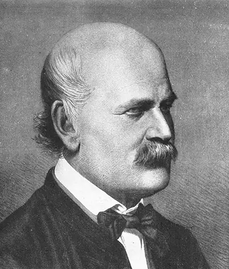
Around the same time Semmelweis was promoting handwashing, in 1848, British physician John Snow conducted studies to track the source of cholera outbreaks in London. By tracing the outbreaks to two specific water sources, both of which were contaminated by sewage, Snow ultimately demonstrated that cholera bacteria were transmitted via drinking water. Snow’s work is influential in that it represents the first known epidemiological study, and it resulted in the first known public health response to an epidemic. The work of both Semmelweis and Snow clearly refuted the prevailing miasma theory of the day, showing that disease is not only transmitted through the air but also through contaminated items.
Although the work of Semmelweis and Snow successfully showed the role of sanitation in preventing infectious disease, the cause of disease was not fully understood. The subsequent work of Louis Pasteur, Robert Koch, and Joseph Lister would further substantiate the germ theory of disease.
While studying the causes of beer and wine spoilage in 1856, Pasteur discovered properties of fermentation by microorganisms. He had demonstrated with his swan-neck flask experiments (Figure 3.4) that airborne microbes, not spontaneous generation, were the cause of food spoilage, and he suggested that if microbes were responsible for food spoilage and fermentation, they could also be responsible for causing infection. This was the foundation for the germ theory of disease.
Meanwhile, British surgeon Joseph Lister (Figure 3.9) was trying to determine the causes of postsurgical infections. Many physicians did not give credence to the idea that microbes on their hands, on their clothes, or in the air could infect patients’ surgical wounds, despite the fact that 50% of surgical patients, on average, were dying of postsurgical infections.15 Lister, however, was familiar with the work of Semmelweis and Pasteur; therefore, he insisted on handwashing and extreme cleanliness during surgery. In 1867, to further decrease the incidence of postsurgical wound infections, Lister began using carbolic acid (phenol) spray disinfectant/antiseptic during surgery. His extremely successful efforts to reduce postsurgical infection caused his techniques to become a standard medical practice.
A few years later, Robert Koch (Figure 3.9) proposed a series of postulates (Koch’s postulates) based on the idea that the cause of a specific disease could be attributed to a specific microbe. Using these postulates, Koch and his colleagues were able to definitively identify the causative pathogens of specific diseases, including anthrax, tuberculosis, and cholera. Koch’s “one microbe, one disease” concept was the culmination of the 19th century’s paradigm shift away from miasma theory and toward the germ theory of disease. Koch’s postulates are discussed more thoroughly in How Pathogens Cause Disease.
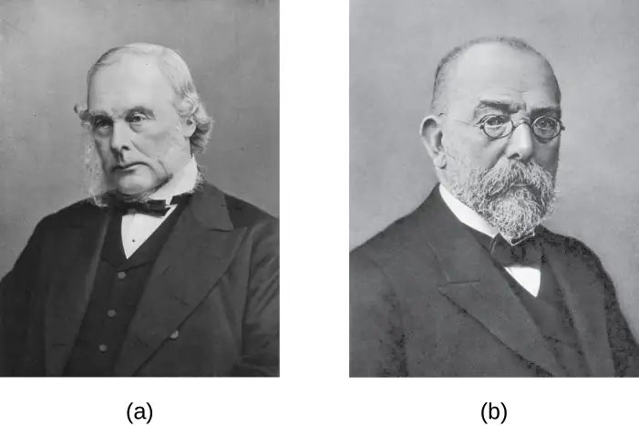
Check Your Understanding
- Compare and contrast the miasma theory of disease with the germ theory of disease.
- How did Joseph Lister’s work contribute to the debate between the miasma theory and germ theory and how did this increase the success of medical procedures?
Clinical Focus: Part 2
After suffering a fever, congestion, cough, and increasing aches and pains for several days, Barbara suspects that she has a case of the flu. She decides to visit the health center at her university. The PA tells Barbara that her symptoms could be due to a range of diseases, such as influenza, bronchitis, pneumonia, or tuberculosis.
During her physical examination, the PA notes that Barbara’s heart rate is slightly elevated. Using a pulse oximeter, a small device that clips on her finger, he finds that Barbara has hypoxemia—a lower-than-normal level of oxygen in the blood. Using a stethoscope, the PA listens for abnormal sounds made by Barbara’s heart, lungs, and digestive system. As Barbara breathes, the PA hears a crackling sound and notes a slight shortness of breath. He collects a sputum sample, noting the greenish color of the mucus, and orders a chest radiograph, which shows a “shadow” in the left lung. All of these signs are suggestive of pneumonia, a condition in which the lungs fill with mucus (Figure 3.10).
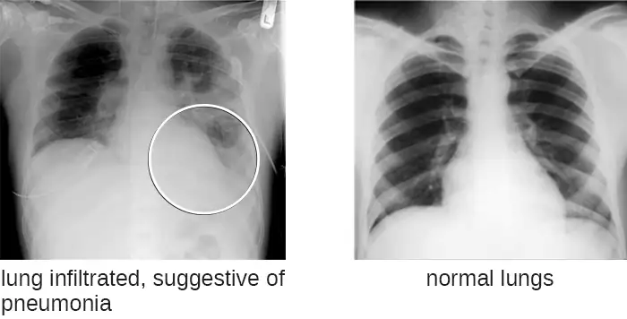
- What kinds of infectious agents are known to cause pneumonia?
Jump to the next Clinical Focus box. Go back to the previous Clinical Focus box.
![A timeline. To the far left are the ancient Greeks who proposed the Miasma Theory. In 1546 Fracastoro begins early version of Germ Theory in De Contagione et Contagiosis Morbis. In 1665 Hooke observes cork cells under a microscope. In 1674 van Leeuwenhoek observes single-celled organisms. In 1847 Semmelweis demonstrates that hand washing reduces puerperal infections. In 1854 Snow demonstrates that cholera bacteria were transmitted in contaminated drinking water. In 1856 Pasteur discovers microbial fermentation while studying the cause of spoilage in beer and wine. In 1862 Pasteur disproves spontaneous generation with swan-neck flask experiment. In 1867 Lister begins using carbolic acid as a disinfectant during surgery. From 1867 – 1906 Koch and his workers determine causative agents for many bacterial infections.](img/osc-microbio-03-02-germtimeln.webp)
3.3 Unique Characteristics of Prokaryotic Cells¶
Learning Objectives
By the end of this section, you will be able to:
- Explain the distinguishing characteristics of prokaryotic cells
- Describe common cell morphologies and cellular arrangements typical of prokaryotic cells and explain how cells maintain their morphology
- Describe internal and external structures of prokaryotic cells in terms of their physical structure, chemical structure, and function
- Compare the distinguishing characteristics of bacterial and archaeal cells
Cell theory states that the cell is the fundamental unit of life. However, cells vary significantly in size, shape, structure, and function. At the simplest level of construction, all cells possess a few fundamental components. These include cytoplasm (a gel-like substance composed of water and dissolved chemicals needed for growth), which is contained within a plasma membrane (also called a cell membrane or cytoplasmic membrane); one or more chromosomes, which contain the genetic blueprints of the cell; and ribosomes, organelles used for the production of proteins.
Beyond these basic components, cells can vary greatly between organisms, and even within the same multicellular organism. The two largest categories of cells—prokaryotic cells and eukaryotic cells—are defined by major differences in several cell structures. Prokaryotic cells lack a nucleus surrounded by a complex nuclear membrane and generally have a single, circular chromosome located in a nucleoid. Eukaryotic cells have a nucleus surrounded by a complex nuclear membrane that contains multiple, rod-shaped chromosomes.16
All plant cells and animal cells are eukaryotic. Some microorganisms are composed of prokaryotic cells, whereas others are composed of eukaryotic cells. Prokaryotic microorganisms are classified within the domains Archaea and Bacteria, whereas eukaryotic organisms are classified within the domain Eukarya.
The structures inside a cell are analogous to the organs inside a human body, with unique structures suited to specific functions. Some of the structures found in prokaryotic cells are similar to those found in some eukaryotic cells; others are unique to prokaryotes. Although there are some exceptions, eukaryotic cells tend to be larger than prokaryotic cells. The comparatively larger size of eukaryotic cells dictates the need to compartmentalize various chemical processes within different areas of the cell, using complex membrane-bound organelles. In contrast, prokaryotic cells generally lack membrane-bound organelles; however, they often contain inclusions that compartmentalize their cytoplasm. Figure 3.12 illustrates structures typically associated with prokaryotic cells. These structures are described in more detail in the next section.
![A diagram of a rod-shaped prokaryotic cell. The thick outer layer is called the capsule, inside of that is a thinner cell wall and inside of that is an even thinner plasma membrane. Inside of the plasma membrane is a fluid called the cytoplasm, little dots called ribosomes, small spheres called inclusions, a small loop of DNA called a plasmid, and a large folded loo of DNA called the nucleoid. Long projections start at the plasma membrane and extend out of the capsule; these are called flagella (singular: flagellum). A shorter projection is labeled pilus. And many very short projections are labeled fimbriae.](img/osc-microbio-03-03-prokcell-dd83.webp)
Common Cell Morphologies and Arrangements¶
Individual cells of a particular prokaryotic organism are typically similar in shape, or cell morphology. Although thousands of prokaryotic organisms have been identified, only a handful of cell morphologies are commonly seen microscopically. Figure 3.13 names and illustrates cell morphologies commonly found in prokaryotic cells. In addition to cellular shape, prokaryotic cells of the same species may group together in certain distinctive arrangements depending on the plane of cell division. Some common arrangements are shown in Figure 3.14.
![Common Prokaryotic Cell Shapes. The term Coccus (plural: cocci) is the name given to round, spherical shapes. The term bacillus (plural: bacilli) is the name given to rod shaped cells. These cells are shaped like long rounded rectangles. The term vibrio (plural vibrios) is the name given to curved rods, these cells have a shape like a long comma. The term coccobacillus (plural coccobacilli) is the name for short rods; these cells look like ovals. The term spirillum (plural spirilla) is the name for long spiral cells; these look like cork screws. The term spirochete (plural spirochetes) is the name for long, loose helical spiral shaped cells. These look similar to the spirillum but are more floppy.](img/osc-microbio-03-03-proktable.webp)
![Common prokaryotic cell arrangments. The term Coccus (plural cocci) is the name for a single coccus (a single round cell). The term diplococcus (plural diplococci) is the name for a pair of two cocci (two spheres attached together). The term tetrad (plural tetrads) is the name for a grouping of four cells arranged in a square. The term streptococcus (plural streptococci) is the name for a chain of cocci; the spheres are connected into a long chain. The term staphylococcus (plural staphylococci) is the name for a cluster of cocci; the spheres are connected into a bundle. The term bacillus (plural bacilli) is the name for a single rod. The term diplobacillus (plural diplobacilli) is the name for a pair of rods. The term streptobacillus (plural streptobacilli) is the name for a chain of rods; the rectangles are connected into a long chain. The term palisade (plural palisades) is the name for a v- or l-shaped formation of rods.](img/osc-microbio-03-03-prokarrang.webp)
In most prokaryotic cells, morphology is maintained by the cell wall in combination with cytoskeletal elements. The cell wall is a structure found in most prokaryotes and some eukaryotes; it envelopes the cell membrane, protecting the cell from changes in osmotic pressure (Figure 3.15). Osmotic pressure occurs because of differences in the concentration of solutes on opposing sides of a semipermeable membrane. Water is able to pass through a semipermeable membrane, but solutes (dissolved molecules like salts, sugars, and other compounds) cannot. When the concentration of solutes is greater on one side of the membrane, water diffuses across the membrane from the side with the lower concentration (more water) to the side with the higher concentration (less water) until the concentrations on both sides become equal. This diffusion of water is called osmosis, and it can cause extreme osmotic pressure on a cell when its external environment changes.
The external environment of a cell can be described as an isotonic, hypertonic, or hypotonic medium. In an isotonic medium, the solute concentrations inside and outside the cell are approximately equal, so there is no net movement of water across the cell membrane. In a hypertonic medium, the solute concentration outside the cell exceeds that inside the cell, so water diffuses out of the cell and into the external medium. In a hypotonic medium, the solute concentration inside the cell exceeds that outside of the cell, so water will move by osmosis into the cell. This causes the cell to swell and potentially lyse, or burst.
The degree to which a particular cell is able to withstand changes in osmotic pressure is called tonicity. Cells that have a cell wall are better able to withstand subtle changes in osmotic pressure and maintain their shape. In hypertonic environments, cells that lack a cell wall can become dehydrated, causing crenation, or shriveling of the cell; the plasma membrane contracts and appears scalloped or notched (Figure 3.15). By contrast, cells that possess a cell wall undergo plasmolysis rather than crenation. In plasmolysis, the plasma membrane contracts and detaches from the cell wall, and there is a decrease in interior volume, but the cell wall remains intact, thus allowing the cell to maintain some shape and integrity for a period of time (Figure 3.16). Likewise, cells that lack a cell wall are more prone to lysis in hypotonic environments. The presence of a cell wall allows the cell to maintain its shape and integrity for a longer time before lysing (Figure 3.16).
![a) An isotonic solution is a solution that has the same solute concentration as another solution. There is no net movement of water particles, and the overall concentration on both sides of the cell membrane remains constant. The image shows a cell with 20% solute (80% water) in a beaker containing 20% solute (80% water). Arrows in and out indicate that water moves both into and out of the cell. b) A hypertonic solution is a solution that has a higher solute concentration than another solution. Water particles will move out of the cell, causing crenation. The cell in this image still has 20% solute concentration (80% water) but the cell is now in a beaker containing 40% solute concentration (60% water). An arrow shows water moving out of the cell and the cell shriveling. C) A hypotonic solution is a solution that has a lower solute concentration than another solution. Water particles will move into the cell, causing the cell to expand and eventually lyse. The cell in this diagram still has 20% solute concentration (80% water) but is now in a beaker containing 10% solute concentration (90% water). An arrow shows water mving into the cell and the cell swelling.](img/osc-microbio-03-03-tonicity.webp)
![a) In an isotonic solution there is no net movement of water particles. The cell membrane is attached to the cell wall. The drawing shows a rectangular cell; the cell membrane is just inside the cell wall. Arrows indicate that water is moving both in and out. B) In a hypertonic solution water partices move out of the cell. The cell membrane shrinks and detaches from the cell wall (plasmolysis). The diagram shows a cell that has shriveled. Points of the cell membrane are still attached to the cell wall but most of the cell membrane has pulled away from the cell wall resulting in a star-shaped cell. Arrows show water leaving the cell. In a hypertonic solution water particles move into the cell. The cell wall counteracts osmotic pressure to prevent swelling and lysing. The image shows the same rectangular cell as in the isotonic solution except that the cell and cell wall are bulging outwards a bit. Arrows show water entering the cell.](img/osc-microbio-03-03-plasmolysi.webp)
Check Your Understanding
- Explain the difference between cell morphology and arrangement.
- What advantages do cell walls provide prokaryotic cells?
The Nucleoid¶
All cellular life has a DNA genome organized into one or more chromosomes. Prokaryotic chromosomes are typically circular, haploid (unpaired), and not bound by a complex nuclear membrane. Prokaryotic DNA and DNA-associated proteins are concentrated within the nucleoid region of the cell (Figure 3.17). In general, prokaryotic DNA interacts with nucleoid-associated proteins (NAPs) that assist in the organization and packaging of the chromosome. In bacteria, NAPs function similar to histones, which are the DNA-organizing proteins found in eukaryotic cells. In archaea, the nucleoid is organized by either NAPs or histone-like DNA organizing proteins.
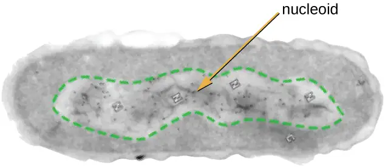
Plasmids¶
Prokaryotic cells may also contain extrachromosomal DNA, or DNA that is not part of the chromosome. This extrachromosomal DNA is found in plasmids, which are small, circular, double-stranded DNA molecules. Cells that have plasmids often have hundreds of them within a single cell. Plasmids are more commonly found in bacteria; however, plasmids have been found in archaea and eukaryotic organisms. Plasmids often carry genes that confer advantageous traits such as antibiotic resistance; thus, they are important to the survival of the organism. We will discuss plasmids in more detail in Mechanisms of Microbial Genetics.
Ribosomes¶
All cellular life synthesizes proteins, and organisms in all three domains of life possess ribosomes, structures responsible for protein synthesis. However, ribosomes in each of the three domains are structurally different. Ribosomes, themselves, are constructed from proteins, along with ribosomal RNA (rRNA). Prokaryotic ribosomes are found in the cytoplasm. They are called 70S ribosomes because they have a size of 70S (Figure 3.18), whereas eukaryotic cytoplasmic ribosomes have a size of 80S. (The S stands for Svedberg unit, a measure of sedimentation in an ultracentrifuge, which is based on size, shape, and surface qualities of the structure being analyzed). Although they are the same size, bacterial and archaeal ribosomes have different proteins and rRNA molecules, and the archaeal versions are more similar to their eukaryotic counterparts than to those found in bacteria.
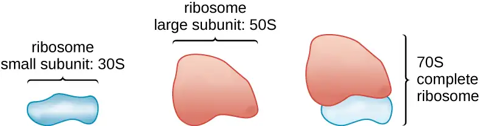
Inclusions¶
As single-celled organisms living in unstable environments, some prokaryotic cells have the ability to store excess nutrients within cytoplasmic structures called inclusions. Storing nutrients in a polymerized form is advantageous because it reduces the buildup of osmotic pressure that occurs as a cell accumulates solutes. Various types of inclusions store glycogen and starches, which contain carbon that cells can access for energy. Volutin granules, also called metachromatic granules because of their staining characteristics, are inclusions that store polymerized inorganic phosphate that can be used in metabolism and assist in the formation of biofilms. Microbes known to contain volutin granules include the archaea Methanosarcina, the bacterium Corynebacterium diphtheriae, and the unicellular eukaryotic alga Chlamydomonas. Sulfur granules, another type of inclusion, are found in sulfur bacteria of the genus Thiobacillus; these granules store elemental sulfur, which the bacteria use for metabolism.
Occasionally, certain types of inclusions are surrounded by a phospholipid monolayer embedded with protein. Polyhydroxybutyrate (PHB), which can be produced by species of Bacillus and Pseudomonas, is an example of an inclusion that displays this type of monolayer structure. Industrially, PHB has also been used as a source of biodegradable polymers for bioplastics. Several different types of inclusions are shown in Figure 3.19.
![a) A micrograph showing gray spheres each containing 2-8 smaller white spheres. The gray spheres are approximately 600 nm in diameter B) A micrograph showing thin ribbons of approximately 100 µm length; each ribbon contains many dark spots in a line down the center of the ribbon. C) A micrograph showing a gray sphere of approximately 4 µm diameter with a cluster of smaller white spheres at the bottom of the larger sphere. D) A micrograph showing a larger sphere of approximately 10 µm diameter with many smaller spheres of approximately 1 µm diameter inside of the larger sphere. 3) a micrograph showing a long ribbon over 500 nm in length with small dots in the center. A closeup shows the dots to be a chain of spheres approximately 20 nm in diameter.](img/osc-microbio-03-03-incbodies.webp)
Some prokaryotic cells have other types of inclusions that serve purposes other than nutrient storage. For example, some prokaryotic cells produce gas vacuoles, accumulations of small, protein-lined vesicles of gas. These gas vacuoles allow the prokaryotic cells that synthesize them to alter their buoyancy so that they can adjust their location in the water column. Magnetotactic bacteria, such as Magnetospirillum magnetotacticum, contain magnetosomes, which are inclusions of magnetic iron oxide or iron sulfide surrounded by a lipid layer. These allow cells to align along a magnetic field, aiding their movement (Figure 3.19). Cyanobacteria such as Anabaena cylindrica and bacteria such as Halothiobacillus neapolitanus produce carboxysome inclusions. Carboxysomes are composed of outer shells of thousands of protein subunits. Their interior is filled with ribulose-1,5-bisphosphate carboxylase/oxygenase (RuBisCO) and carbonic anhydrase. Both of these compounds are used for carbon metabolism. Some prokaryotic cells also possess carboxysomes that sequester functionally related enzymes in one location. These structures are considered proto-organelles because they compartmentalize important compounds or chemical reactions, much like many eukaryotic organelles.
Endospores¶
Bacterial cells are generally observed as vegetative cells, but some genera of bacteria have the ability to form endospores, structures that essentially protect the bacterial genome in a dormant state when environmental conditions are unfavorable. Endospores (not to be confused with the reproductive spores formed by fungi) allow some bacterial cells to survive long periods without food or water, as well as exposure to chemicals, extreme temperatures, and even radiation. Table 3.1 compares the characteristics of vegetative cells and endospores.
Table 3.1
| Characteristics of Vegetative Cells versus Endospores | |
|---|---|
| Vegetative Cells | Endospores |
| Sensitive to extreme temperatures and radiation | Resistant to extreme temperatures and radiation |
| Nearly all endospore-producing bacteria gram-positive as vegetative cells | Do not absorb Gram stain, only special endospore stains (see Staining Microscopic Specimens) |
| Normal water content and enzymatic activity | Dehydrated; no metabolic activity |
| Capable of active growth and metabolism | Dormant; no growth or metabolic activity |
The process by which vegetative cells transform into endospores is called sporulation, and it generally begins when nutrients become depleted or environmental conditions become otherwise unfavorable (Figure 3.20). The process begins with the formation of a septum in the vegetative bacterial cell. The septum divides the cell asymmetrically, separating a DNA forespore from the mother cell. The forespore, which will form the core of the endospore, is essentially a copy of the cell’s chromosomes, and is separated from the mother cell by a second membrane. A cortex gradually forms around the forespore by laying down layers of calcium and dipicolinic acid between membranes. A protein coat then forms around the cortex while the DNA of the mother cell disintegrates. Further maturation of the endospore occurs with the formation of an outermost exosporium. The endospore is released upon disintegration of the mother cell, completing sporulation.
![a) A diagram showing the process of sporulation. Step 1 – the DNA replicates. The image shows a rod shaped cell with 2 loops of DNA; one in the center and one towards the end of the cell. Step 2 – Membranes form around the DNA. The drawing shows lines encircling the loop of DNA at the end of the cell. Step 3 – Forespore forms additional membranes. The lines around the loop of DNA are thickened. Step 4 – Protective cortex forms around the spore. The lines around the loop of DNA are thickened even more. Step 5 – protein coat forma around the cortex. The lines around the loop of DNA are thickened even more and the outer cell lyses. Step 6 – the endospore is released. A small spherical structure with DNA inside of many thick layers is shown. B) A micrograph of an endospore shows a dark central core inside a lighter region; these are surrounded by thick layers on the outside. C) a micrograph showing red rods in chains; many of the rods have a green dot in their center.](img/osc-microbio-03-03-sporulation.webp)
Endospores of certain species have been shown to persist in a dormant state for extended periods of time, up to thousands of years.17 However, when living conditions improve, endospores undergo germination, reentering a vegetative state. After germination, the cell becomes metabolically active again and is able to carry out all of its normal functions, including growth and cell division.
Not all bacteria have the ability to form endospores; however, there are a number of clinically significant endospore-forming gram-positive bacteria of the genera Bacillus and Clostridium. These include B. anthracis, the causative agent of anthrax, which produces endospores capable of surviving for many decades18; C. tetani (causes tetanus); C. perfringens (causes gas gangrene); and C. botulinum (causes botulism). Clostridioides difficile is a distant relative causing pseudomembranous colitis. Pathogens such as these are particularly difficult to combat because their endospores are so hard to kill. Special sterilization methods for endospore-forming bacteria are discussed in Control of Microbial Growth.
Check Your Understanding
- What is an inclusion?
- What is the function of an endospore?
Plasma Membrane¶
Structures that enclose the cytoplasm and internal structures of the cell are known collectively as the cell envelope. In prokaryotic cells, the structures of the cell envelope vary depending on the type of cell and organism. Most (but not all) prokaryotic cells have a cell wall, but the makeup of this cell wall varies. All cells (prokaryotic and eukaryotic) have a plasma membrane (also called cytoplasmic membrane or cell membrane) that exhibits selective permeability, allowing some molecules to enter or leave the cell while restricting the passage of others.
The structure of the plasma membrane is often described in terms of the fluid mosaic model, which refers to the ability of membrane components to move fluidly within the plane of the membrane, as well as the mosaic-like composition of the components, which include a diverse array of lipid and protein components (Figure 3.21). The plasma membrane structure of most bacterial and eukaryotic cell types is a bilayer composed mainly of phospholipids formed with ester linkages and proteins. These phospholipids and proteins have the ability to move laterally within the plane of the membranes as well as between the two phospholipid layers.
![A drawing of the plasma membrane. The top of the diagram is labeled outside of cell, the bottom is labeled cytoplasm. Separating these two regions is the membrane which is made of mostly a phospholipid bilayer. Each phospholipid is drawn as a sphere with 2 tails. There are two layers of phospholipids making up the bilayer; each phospholipid layer has the sphere towards the outside of the bilayer and the two tails towards the inside of the bilayer. Embedded within the phospholipid bilayer are a variety of large proteins. Protein channels span the entire bilayer and have a pore in the center that connects the outside of the cell with the cytoplasm. Peripheral proteins sit on one side of the phospholipid bilayer. Transmembrane proteins span the bilayer. Glycolipids have long carbohydrate chains (shown as a chain of hexagons) attached to a single phospholipid; the carbohydrates are always on the outside of the membrane. Glycoproteins have a long carbohydrate chain attached to a protein; the carbohydrates are on the outside of the membrane. The cytoskeleton is shown as a thin layer of line just under the inside of the phospholipid bilayer.](img/osc-microbio-03-03-plasmamem.webp)
Archaeal membranes are fundamentally different from bacterial and eukaryotic membranes in a few significant ways. First, archaeal membrane phospholipids are formed with ether linkages, in contrast to the ester linkages found in bacterial or eukaryotic cell membranes. Second, archaeal phospholipids have branched chains, whereas those of bacterial and eukaryotic cells are straight chained. Finally, although some archaeal membranes can be formed of bilayers like those found in bacteria and eukaryotes, other archaeal plasma membranes are lipid monolayers.
Proteins on the cell’s surface are important for a variety of functions, including cell-to-cell communication, and sensing environmental conditions and pathogenic virulence factors. Membrane proteins and phospholipids may have carbohydrates (sugars) associated with them and are called glycoproteins or glycolipids, respectively. These glycoprotein and glycolipid complexes extend out from the surface of the cell, allowing the cell to interact with the external environment (Figure 3.21). Glycoproteins and glycolipids in the plasma membrane can vary considerably in chemical composition among archaea, bacteria, and eukaryotes, allowing scientists to use them to characterize unique species.
Plasma membranes from different cells types also contain unique phospholipids, which contain fatty acids. As described in Using Biochemistry to Identify Microorganisms, phospholipid-derived fatty acid analysis (PLFA) profiles can be used to identify unique types of cells based on differences in fatty acids. Archaea, bacteria, and eukaryotes each have a unique PFLA profile.
Membrane Transport Mechanisms¶
One of the most important functions of the plasma membrane is to control the transport of molecules into and out of the cell. Internal conditions must be maintained within a certain range despite any changes in the external environment. The transport of substances across the plasma membrane allows cells to do so.
Cells use various modes of transport across the plasma membrane. For example, molecules moving from a higher concentration to a lower concentration with the concentration gradient are transported by simple diffusion, also known as passive transport (Figure 3.22). Some small molecules, like carbon dioxide, may cross the membrane bilayer directly by simple diffusion. However, charged molecules, as well as large molecules, need the help of carriers or channels in the membrane. These structures ferry molecules across the membrane, a process known as facilitated diffusion (Figure 3.23).
Active transport occurs when cells move molecules across their membrane against concentration gradients (Figure 3.24). A major difference between passive and active transport is that active transport requires adenosine triphosphate (ATP) or other forms of energy to move molecules “uphill.” Therefore, active transport structures are often called “pumps.”
![Simple diffusion. A diagram with a phospholipid bilayer (plasma membrane) along the middle. Above the bilayer is the extracellular fluid and below is the cytoplasm. At the far left there are many hexagons in the extracellular fluid above the bilayer and none in the cytoplasm below. At a later time shown in the middle of the timeline there are a few hexagons in the cytoplasm and still many in the extracellular fluid. At the last timeframe shown on the right there are equal numbers of hexagons in the extracellular fluid as in the cytoplasm.](img/osc-microbio-03-03-simplediff.webp)
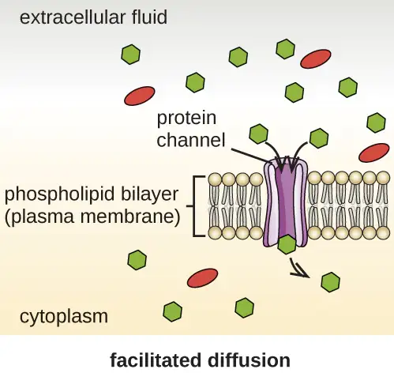
![Active Transport. A diagram with a phospholipid bilayer (plasma membrane) along the middle. Above the bilayer is the extracellular fluid and below is the cytoplasm. There are more sodium ions in the extracellular fluid than in the cytoplasm. There are more potassium ions in the cytoplasm than in the extracellular fluid. A protein in the membrane is shown moving sodium from the cytoplasm to the extracellular fluid. The same membrane is shown moving potassium from the extracellular fluid to the cytoplasm. As the protein moves these ions, it also breaks down ATP to ADP.](img/osc-microbio-03-03-transport.webp)
Group translocation also transports substances into bacterial cells. In this case, as a molecule moves into a cell against its concentration gradient, it is chemically modified so that it does not require transport against an unfavorable concentration gradient. A common example of this is the bacterial phosphotransferase system, a series of carriers that phosphorylates (i.e., adds phosphate ions to) glucose or other sugars upon entry into cells. Since the phosphorylation of sugars is required during the early stages of sugar metabolism, the phosphotransferase system is considered to be an energy neutral system.
Photosynthetic Membrane Structures¶
Some prokaryotic cells, namely cyanobacteria and photosynthetic bacteria, have membrane structures that enable them to perform photosynthesis. These structures consist of an infolding of the plasma membrane that encloses photosynthetic pigments such as green chlorophylls and bacteriochlorophylls. In cyanobacteria, these membrane structures are called thylakoids; in photosynthetic bacteria, they are called chromatophores, lamellae, or chlorosomes.
Cell Wall¶
The primary function of the cell wall is to protect the cell from harsh conditions in the outside environment. When present, there are notable similarities and differences among the cell walls of archaea, bacteria, and eukaryotes.
The major component of bacterial cell walls is called peptidoglycan (or murein); it is only found in bacteria. Structurally, peptidoglycan resembles a layer of meshwork or fabric (Figure 3.25). Each layer is composed of long chains of alternating molecules of N-acetylglucosamine (NAG) and N-acetylmuramic acid (NAM). The structure of the long chains has significant two-dimensional tensile strength due to the formation of peptide bridges that connect NAG and NAM within each peptidoglycan layer. In gram-negative bacteria, tetrapeptide chains extending from each NAM unit are directly cross-linked, whereas in gram-positive bacteria, these tetrapeptide chains are linked by pentaglycine cross-bridges. Peptidoglycan subunits are made inside of the bacterial cell and then exported and assembled in layers, giving the cell its shape.
Since peptidoglycan is unique to bacteria, many antibiotic drugs are designed to interfere with peptidoglycan synthesis, weakening the cell wall and making bacterial cells more susceptible to the effects of osmotic pressure (see Mechanisms of Antibacterial Drugs). In addition, certain cells of the human immune system are able “recognize” bacterial pathogens by detecting peptidoglycan on the surface of a bacterial cell; these cells then engulf and destroy the bacterial cell, using enzymes such as lysozyme, which breaks down and digests the peptidoglycan in their cell walls (see Pathogen Recognition and Phagocytosis).
![The diagram of the gram-positive cell wall shows alternative NAG (N-acetylglucosamine) and NAM (N-acetylmuramic acid) in a chain; these are shown as alternative red and blue spheres. The chains or red and blue spheres are connected to other chains with smaller yellow spheres in a chain labeled pentapeptide and smaller green spheres labeled tetrapeptide. Each NAG in the chain is connected to the NAG in the chains next to it by both a tetrapeptide connected to a pentapeptide. The diagram of the gram-negative cell wall has the same NAG and NAM chains. But this time they are linked with a kirect line to the chains next to them.](img/osc-microbio-03-03-peptidogly.webp)
The Gram staining protocol (see Staining Microscopic Specimens) is used to differentiate two common types of cell wall structures (Figure 3.26). Gram-positive cells have a cell wall consisting of many layers of peptidoglycan totaling 30–100 nm in thickness. These peptidoglycan layers are commonly embedded with teichoic acids (TAs), carbohydrate chains that extend through and beyond the peptidoglycan layer.19 TA is thought to stabilize peptidoglycan by increasing its rigidity. TA also plays a role in the ability of pathogenic gram-positive bacteria such as Streptococcus to bind to certain proteins on the surface of host cells, enhancing their ability to cause infection. In addition to peptidoglycan and TAs, bacteria of the family Mycobacteriaceae have an external layer of waxy mycolic acids in their cell wall; as described in Staining Microscopic Specimens, these bacteria are referred to as acid-fast, since acid-fast stains must be used to penetrate the mycolic acid layer for purposes of microscopy (Figure 3.27).
![The gram-positive bacterial cell wall diagram shows a plasma membrane on top of the cytoplasm. The cell wall is shown as a thick layer of peptidoglycans connected to the plasma membrane by techoic acids. The gram-negative cell wall also has a plasma membrane on top of the cytoplasm. On top of the plasma membrane is a thin periplasmic space. On top of that is a thin peptidoglycan cell wall. On top of that is an outer membrane that contains murein lipoproteins that connect the outer membrane to the peptidoglycan cell wall. Lipid A, O antigens, and lipopolysaccharides sit on top of the outer membrane. Proins are tubes that connect the outside of the outer membrane with the region of the peptidoglycan cell wall.](img/osc-microbio-03-03-cellwalls.webp)
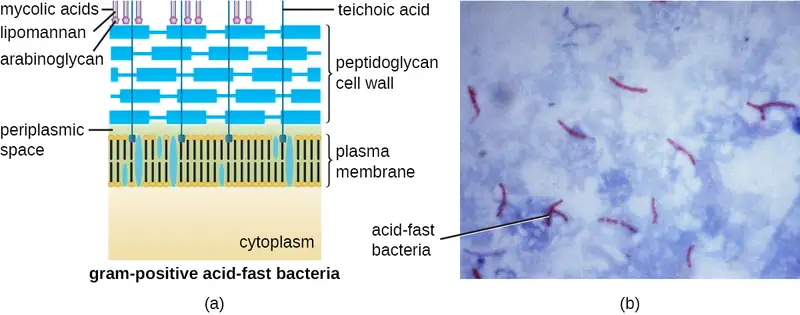
Gram-negative cells have a much thinner layer of peptidoglycan (no more than about 4 nm thick21) than gram-positive cells, and the overall structure of their cell envelope is more complex. In gram-negative cells, a gel-like matrix occupies the periplasmic space between the cell wall and the plasma membrane, and there is a second lipid bilayer called the outer membrane, which is external to the peptidoglycan layer (Figure 3.26). This outer membrane is attached to the peptidoglycan by murein lipoprotein. The outer leaflet of the outer membrane contains the molecule lipopolysaccharide (LPS), which functions as an endotoxin in infections involving gram-negative bacteria, contributing to symptoms such as fever, hemorrhaging, and septic shock. Each LPS molecule is composed of Lipid A, a core polysaccharide, and an O side chain that is composed of sugar-like molecules that comprise the external face of the LPS (Figure 3.28). The composition of the O side chain varies between different species and strains of bacteria. Parts of the O side chain called antigens can be detected using serological or immunological tests to identify specific pathogenic strains like Escherichia coli O157:H7, a deadly strain of bacteria that causes bloody diarrhea and kidney failure.
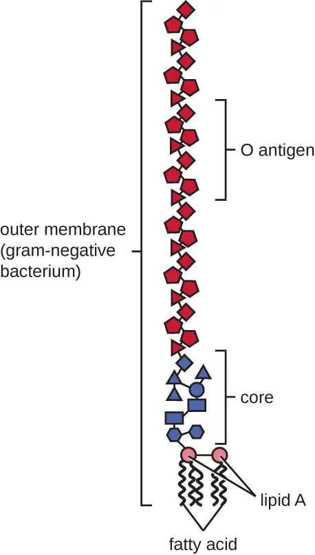
Archaeal cell wall structure differs from that of bacteria in several significant ways. First, archaeal cell walls do not contain peptidoglycan; instead, they contain a similar polymer called pseudopeptidoglycan (pseudomurein) in which NAM is replaced with a different subunit. Other archaea may have a layer of glycoproteins or polysaccharides that serves as the cell wall instead of pseudopeptidoglycan. Last, as is the case with some bacterial species, there are a few archaea that appear to lack cell walls entirely.
Glycocalyces and S-Layers¶
Although most prokaryotic cells have cell walls, some may have additional cell envelope structures exterior to the cell wall, such as glycocalyces and S-layers. A glycocalyx is a sugar coat, of which there are two important types: capsules and slime layers. A capsule is an organized layer located outside of the cell wall and usually composed of polysaccharides or proteins (Figure 3.29). A slime layer is a less tightly organized layer that is only loosely attached to the cell wall and can be more easily washed off. Slime layers may be composed of polysaccharides, glycoproteins, or glycolipids.
Glycocalyces allows cells to adhere to surfaces, aiding in the formation of biofilms (colonies of microbes that form in layers on surfaces). In nature, most microbes live in mixed communities within biofilms, partly because the biofilm affords them some level of protection. Biofilms generally hold water like a sponge, preventing desiccation. They also protect cells from predation and hinder the action of antibiotics and disinfectants. All of these properties are advantageous to the microbes living in a biofilm, but they present challenges in a clinical setting, where the goal is often to eliminate microbes.
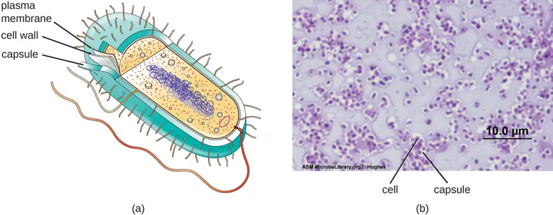
The ability to produce a capsule can contribute to a microbe’s pathogenicity (ability to cause disease) because the capsule can make it more difficult for phagocytic cells (such as white blood cells) to engulf and kill the microorganism. Streptococcus pneumoniae, for example, produces a capsule that is well known to aid in this bacterium’s pathogenicity. As explained in Staining Microscopic specimens, capsules are difficult to stain for microscopy; negative staining techniques are typically used.
An S-layer is another type of cell envelope structure; it is composed of a mixture of structural proteins and glycoproteins. In bacteria, S-layers are found outside the cell wall, but in some archaea, the S-layer serves as the cell wall. The exact function of S-layers is not entirely understood, and they are difficult to study; but available evidence suggests that they may play a variety of functions in different prokaryotic cells, such as helping the cell withstand osmotic pressure and, for certain pathogens, interacting with the host immune system.
Clinical Focus: Part 3
After diagnosing Barbara with pneumonia, the PA writes her a prescription for amoxicillin, a commonly-prescribed type of penicillin derivative. More than a week later, despite taking the full course as directed, Barbara still feels weak and is not fully recovered, although she is still able to get through her daily activities. She returns to the health center for a follow-up visit.
Many types of bacteria, fungi, and viruses can cause pneumonia. Amoxicillin targets the peptidoglycan of bacterial cell walls. Since the amoxicillin has not resolved Barbara’s symptoms, the PA concludes that the causative agent probably lacks peptidoglycan, meaning that the pathogen could be a virus, a fungus, or a bacterium that lacks peptidoglycan. Another possibility is that the pathogen is a bacterium containing peptidoglycan but has developed resistance to amoxicillin.
- How can the PA definitively identify the cause of Barbara’s pneumonia?
- What form of treatment should the PA prescribe, given that the amoxicillin was ineffective?
Jump to the next Clinical Focus box. Go back to the previous Clinical Focus box.
Filamentous Appendages¶
Many bacterial cells have protein appendages embedded within their cell envelopes that extend outward, allowing interaction with the environment. These appendages can attach to other surfaces, transfer DNA, or provide movement. Filamentous appendages include fimbriae, pili, and flagella.
Fimbriae and Pili¶
Fimbriae and pili are structurally similar and, because differentiation between the two is problematic, these terms are often used interchangeably.22 23 The term fimbriae commonly refers to short bristle-like proteins projecting from the cell surface by the hundreds. Fimbriae enable a cell to attach to surfaces and to other cells. For pathogenic bacteria, adherence to host cells is important for colonization, infectivity, and virulence. Adherence to surfaces is also important in biofilm formation.
The term pili (singular: pilus) commonly refers to longer, less numerous protein appendages that aid in attachment to surfaces (Figure 3.30). A specific type of pilus, called the F pilus or sex pilus, is important in the transfer of DNA between bacterial cells, which occurs between members of the same generation when two cells physically transfer or exchange parts of their respective genomes (see How Asexual Prokaryotes Achieve Genetic Diversity).
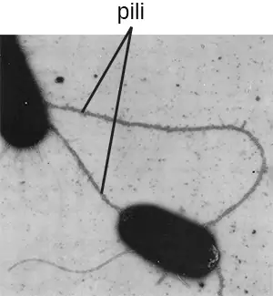
Micro Connections: Group A Strep
Before the structure and function of the various components of the bacterial cell envelope were well understood, scientists were already using cell envelope characteristics to classify bacteria. In 1933, Rebecca Lancefield proposed a method for serotyping various β-hemolytic strains of Streptococcus species using an agglutination assay, a technique using the clumping of bacteria to detect specific cell-surface antigens. In doing so, Lancefield discovered that one group of S. pyogenes, found in Group A, was associated with a variety of human diseases. She determined that various strains of Group A strep could be distinguished from each other based on variations in specific cell surface proteins that she named M proteins.
Today, more than 80 different strains of Group A strep have been identified based on M proteins. Various strains of Group A strep are associated with a wide variety of human infections, including streptococcal pharyngitis (strep throat), impetigo, toxic shock syndrome, scarlet fever, rheumatic fever, and necrotizing fasciitis. The M protein is an important virulence factor for Group A strep, helping these strains evade the immune system. Changes in M proteins appear to alter the infectivity of a particular strain of Group A strep.
Flagella¶
Flagella are structures used by cells to move in aqueous environments. Bacterial flagella act like propellers. They are stiff spiral filaments composed of flagellin protein subunits that extend outward from the cell and spin in solution. The basal body is the motor for the flagellum and is embedded in the plasma membrane (Figure 3.31). A hook region connects the basal body to the filament. Gram-positive and gram-negative bacteria have different basal body configurations due to differences in cell wall structure.
Different types of motile bacteria exhibit different arrangements of flagella (Figure 3.32). A bacterium with a singular flagellum, typically located at one end of the cell (polar), is said to have a monotrichous flagellum. An example of a monotrichously flagellated bacterial pathogen is Vibrio cholerae, the gram-negative bacterium that causes cholera. Cells with amphitrichous flagella have a flagellum or tufts of flagella at each end. An example is Spirillum minor, the cause of spirillary (Asian) rat-bite fever or sodoku. Cells with lophotrichous flagella have a tuft at one end of the cell. The gram-negative bacillus Pseudomonas aeruginosa, an opportunistic pathogen known for causing many infections, including “swimmer’s ear” and burn wound infections, has lophotrichous flagella. Flagella that cover the entire surface of a bacterial cell are called peritrichous flagella. The gram-negative bacterium E. coli shows a peritrichous arrangement of flagella.
![A diagram showing the attachment point of flagella in gram-positive and gram-negative bacteria. The gram-positive diagram shows the filament on the outside of the cell wall; a bent elbow labeled hook connects the filament to the cell wall. A thin line between the filament and hook is labeled junction. The hook connects to a rod which connects to a basal body in the inner membrane. The basal body is a complex structure with a C-ring on the bottom. In the center of this ring is a sphere labeled type III secretion protein. Outside of this are oval structures labeled stator. On top of the secretion protein is a ring labeled MS-ring. The gram-negative flagellum is similar. There is a filament attached to a junction attached to hook. In the outer membrane is a ring labeled L-ring that connects to a rod in the periplasmic space. A P-ring sits in the cell wall. In the inner membrane is the C-ring, type III secretion system, MS ring and stator.](img/osc-microbio-03-03-baflagella.webp)
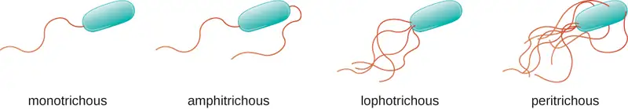
Directional movement depends on the configuration of the flagella. Bacteria can move in response to a variety of environmental signals, including light (phototaxis), magnetic fields (magnetotaxis) using magnetosomes, and, most commonly, chemical gradients (chemotaxis). Purposeful movement toward a chemical attractant, like a food source, or away from a repellent, like a poisonous chemical, is achieved by increasing the length of runs and decreasing the length of tumbles. When running, flagella rotate in a counterclockwise direction, allowing the bacterial cell to move forward. In a peritrichous bacterium, the flagella are all bundled together in a very streamlined way (Figure 3.33), allowing for efficient movement. When tumbling, flagella are splayed out while rotating in a clockwise direction, creating a looping motion and preventing meaningful forward movement but reorienting the cell toward the direction of the attractant. When an attractant exists, runs and tumbles still occur; however, the length of runs is longer, while the length of the tumbles is reduced, allowing overall movement toward the higher concentration of the attractant. When no chemical gradient exists, the lengths of runs and tumbles are more equal, and overall movement is more random (Figure 3.34).
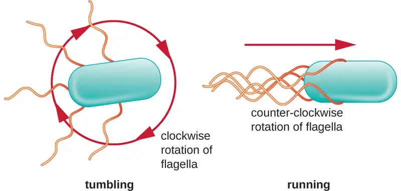
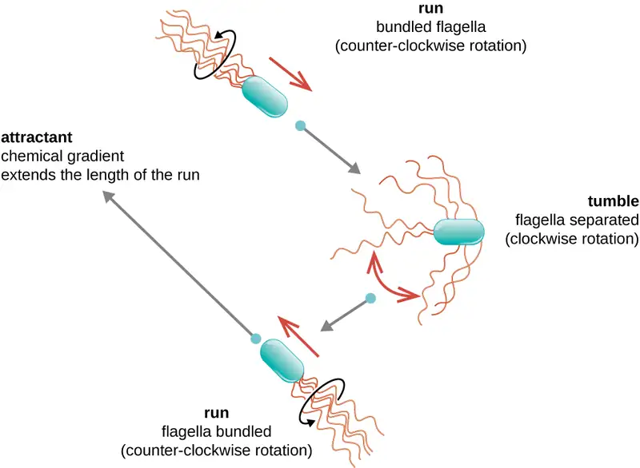
Check Your Understanding
- What is the peptidoglycan layer and how does it differ between gram-positive and gram-negative bacteria?
- Compare and contrast monotrichous, amphitrichous, lophotrichous, and peritrichous flagella.
3.4 Unique Characteristics of Eukaryotic Cells¶
Learning Objectives
By the end of this section, you will be able to:
- Explain the distinguishing characteristics of eukaryotic cells
- Describe internal and external structures of eukaryotic cells in terms of their physical structure, chemical structure, and function
- Identify and describe structures and organelles unique to eukaryotic cells
- Compare and contrast similar structures found in prokaryotic and eukaryotic cells
- Describe the processes of eukaryotic mitosis and meiosis, and compare to prokaryotic binary fission
Eukaryotic organisms include protozoans, algae, fungi, plants, and animals. Some eukaryotic cells are independent, single-celled microorganisms, whereas others are part of multicellular organisms. The cells of eukaryotic organisms have several distinguishing characteristics. Above all, eukaryotic cells are defined by the presence of a nucleus surrounded by a complex nuclear membrane. Also, eukaryotic cells are characterized by the presence of membrane-bound organelles in the cytoplasm. Organelles such as mitochondria, the endoplasmic reticulum (ER), Golgi apparatus, lysosomes, and peroxisomes are held in place by the cytoskeleton, an internal network that supports transport of intracellular components and helps maintain cell shape (Figure 3.35). The genome of eukaryotic cells is packaged in multiple, rod-shaped chromosomes as opposed to the single, circular-shaped chromosome that characterizes most prokaryotic cells. Table 3.2 compares the characteristics of eukaryotic cell structures with those of bacteria and archaea.
![A diagram of a large cell. The outside of the cell is a thin line labeled plasma membrane. A long projection outside of the plasma membrane is labeled flagellum. Shorter projections outside the membrane are labeled cilia. Just under the plasma membrane are lines labeled microtubules and microfilaments. The fluid inside the plasma membrane is labeled cytoplasm. In the cytoplasm are small dots labeled ribosomes. These dots are either floating in the cytoplasm or attached to a webbed membrane labeled rough endoplasmic reticulum. Some regions of the webbed membrane do not have dots; these regions of the membrane are called smooth endoplasmic reticulum. Other structures in the cytoplasm include an oval with a webbed line inside of it; this is labeled the mitochondrion. Spheres in the cytoplasm are labeled peroxisome and lysosome. A pancake stack of membranes is labeled golgi complex. Two short tubes are labeled centrosomes. A large sphere in the cell is labeled nucleus. The outer membrane of this sphere is the nuclear envelope. Holes in the nuclear envelope are called nuclear pores. A smaller sphere in the nucleus is labeled nucleolus.](img/osc-microbio-03-04-eukcell-109a.webp)
Table 3.2
| Summary of Cell Structures | |||
|---|---|---|---|
| Cell Structure | Prokaryotes | Eukaryotes | |
| Bacteria | Archaea | ||
| Size | ~0.5–1 μm | ~0.5–1 μm | ~5–20 μm |
| Surface area-to-volume ratio | High | High | Low |
| Nucleus | No | No | Yes |
| Genome characteristics | • Single chromosome • Circular • Haploid • Lacks histones |
• Single chromosome • Circular • Haploid • Contains histones |
• Multiple chromosomes • Linear • Haploid or diploid • Contains histones |
| Cell division | Binary fission | Binary fission | Mitosis, meiosis |
| Membrane lipid composition | • Ester-linked • Straight-chain fatty acids • Bilayer |
• Ether-linked • Branched isoprenoids • Bilayer or monolayer |
• Ester-linked • Straight-chain fatty acids • Sterols • Bilayer |
| Cell wall composition | • Peptidoglycan, or • None |
• Pseudopeptidoglycan, or • Glycopeptide, or • Polysaccharide, or • Protein (S-layer), or • None |
• Cellulose (plants, some algae) • Chitin (fungi) • Silica (some algae) • Most others lack cell walls |
| Motility structures | Rigid spiral flagella composed of flagellin | Rigid spiral flagella composed of archaeal flagellins | Flexible flagella and cilia composed of microtubules |
| Membrane-bound organelles | No | No | Yes |
| Endomembrane system | No | No | Yes (ER, Golgi, lysosomes) |
| Ribosomes | 70S | 70S | • 80S in cytoplasm and rough ER • 70S in mitochondria, chloroplasts |
Cell Morphologies¶
Eukaryotic cells display a wide variety of different cell morphologies. Possible shapes include spheroid, ovoid, cuboidal, cylindrical, flat, lenticular, fusiform, discoidal, crescent, ring stellate, and polygonal (Figure 3.36). Some eukaryotic cells are irregular in shape, and some are capable of changing shape. The shape of a particular type of eukaryotic cell may be influenced by factors such as its primary function, the organization of its cytoskeleton, the viscosity of its cytoplasm, the rigidity of its cell membrane or cell wall (if it has one), and the physical pressure exerted on it by the surrounding environment and/or adjoining cells.
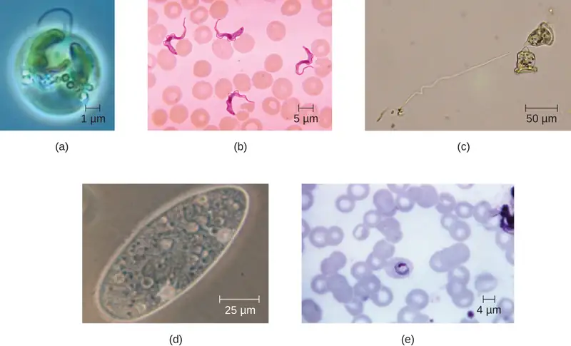
Check Your Understanding
- Identify two differences between eukaryotic and prokaryotic cells.
Nucleus¶
Unlike prokaryotic cells, in which DNA is loosely contained in the nucleoid region, eukaryotic cells possess a nucleus, which is surrounded by a complex nuclear membrane that houses the DNA genome (Figure 3.37). By containing the cell’s DNA, the nucleus ultimately controls all activities of the cell and also serves an essential role in reproduction and heredity. Eukaryotic cells typically have their DNA organized into multiple linear chromosomes. The DNA within the nucleus is highly organized and condensed to fit inside the nucleus, which is accomplished by wrapping the DNA around proteins called histones.
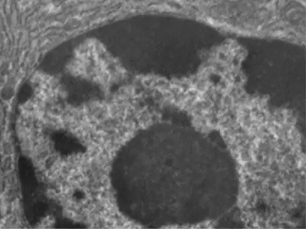
Although most eukaryotic cells have only one nucleus, exceptions exist. For example, protozoans of the genus Paramecium typically have two complete nuclei: a small nucleus that is used for reproduction (micronucleus) and a large nucleus that directs cellular metabolism (macronucleus). Additionally, some fungi transiently form cells with two nuclei, called heterokaryotic cells, during sexual reproduction. Cells whose nuclei divide, but whose cytoplasm does not, are called coenocytes.
The nucleus is bound by a complex nuclear membrane, often called the nuclear envelope, that consists of two distinct lipid bilayers that are contiguous with each other (Figure 3.38). Despite these connections between the inner and outer membranes, each membrane contains unique lipids and proteins on its inner and outer surfaces. The nuclear envelope contains nuclear pores, which are large, rosette-shaped protein complexes that control the movement of materials into and out of the nucleus. The overall shape of the nucleus is determined by the nuclear lamina, a meshwork of intermediate filaments found just inside the nuclear envelope membranes. Outside the nucleus, additional intermediate filaments form a looser mesh and serve to anchor the nucleus in position within the cell.
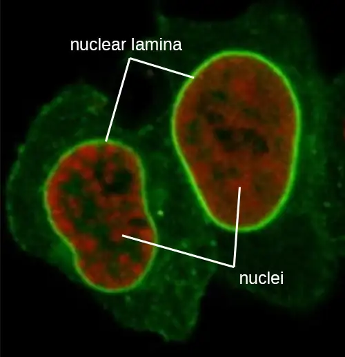
Eukaryotes are able to multiply through asexual reproduction, during which a single parent cell becomes two identical daughter cells. This process of clonal reproduction is called mitosis. Although mitosis may sound similar to asexual binary fission in prokaryotes, the processes are very different. In contrast to the single chromosome in most prokaryotes, eukaryotic cells possess multiple chromosomes that must be replicated and strategically divided between daughter cells. Therefore, mitosis is a much more complex cellular process than binary fission.
The eukaryotic cell cycle is an ordered and carefully regulated series of events involving cell growth, DNA replication, and cell division to produce two clonal daughter cells. One “turn” or cycle of the cell cycle consist of two general phases: interphase and the mitotic phase. (Figure 3.39). During interphase, the cell is not dividing, but rather is undergoing normal growth processes and DNA is replicated preparing for cell division. The three stages of interphase are called G1, S, and G2.
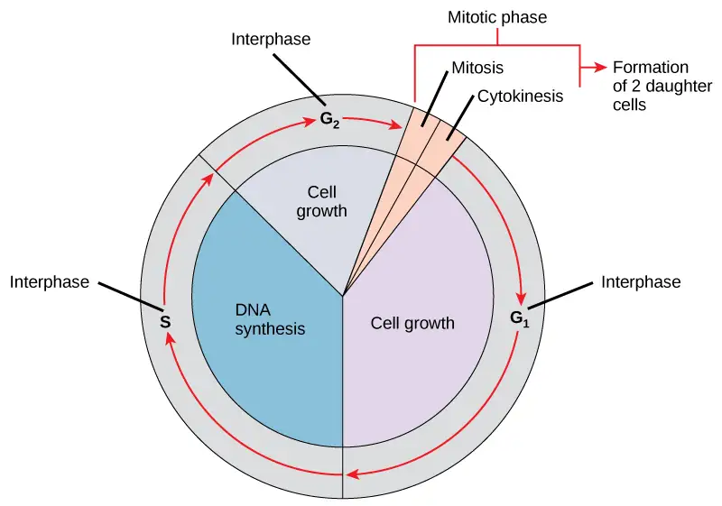
The mitotic phase is a multistep process during which the duplicated chromosomes are aligned, separated, move to opposite poles of the cell, and then are divided into two identical daughter cells. The first portion of the mitotic phase is called karyokinesis, or nuclear division. Karyokinesis is divided into a series of phases—prophase, prometaphase, metaphase, anaphase, and telophase—that result in the division of the cell nucleus (Figure 3.40). The second portion of the mitotic phase, called cytokinesis, is the physical separation of the cytoplasmic components into the two daughter cells.
Link to Learning
Go to this University of Arizona website about the stages of mitosis to learn more.
![This diagram shows the five phases of mitosis and cytokinesis. During prophase, the chromosomes condense and become visible, spindle fibers emerge from the centrosomes, the nuclear envelope breaks down, and the nucleolus disappears. During prometaphase, the chromosomes continue to condense and kinetochores appear at the centromeres. Mitotic spindle microtubules attach to the kinetochores, and centrosomes move toward opposite poles. During metaphase, the mitotic spindle is fully developed, and centrosomes are at opposite poles of the cell. Chromosomes line up at the metaphase plate and each sister chromatid is attached to a spindle fiber originating from the opposite pole. During anaphase, the cohesin proteins that were binding the sister chromatids together break down. The sister chromatids, which are now called chromosomes, move toward opposite poles of the cell. Non-kinetochore spindle fibers lengthen, elongating the cell. During telophase, chromosomes arrive at the opposite poles and begin to decondense. The nuclear envelope reforms. During cytokinesis in animals, a cleavage furrow separates the two daughter cells. In plants, a cell plate separates the two cells.](img/figure-10-02-02.webp)
In addition to the mitotic asexual reproduction described above, most eukaryotic microorganisms also have the option of sexual reproduction involving meiosis. Although mitosis and meiosis both require DNA replication, nuclear division, and share procedural similarities, there are important differences between the process and outcomes (Figure 3.41).
![This illustration compares meiosis and mitosis. In meiosis, there are two rounds of cell division, whereas there is only one round of cell division in mitosis. In both mitosis and meiosis, DNA synthesis occurs during S phase. Synapsis of homologous chromosomes occurs in prophase I of meiosis, but does not occur in mitosis. Crossover of chromosomes occurs in prophase I of meiosis, but does not occur in mitosis. Homologous pairs of chromosomes line up at the metaphase plate during metaphase I of meiosis, but not during mitosis. Sister chromatids line up at the metaphase plate during metaphase II of meiosis and metaphase of mitosis. The result of meiosis is four haploid daughter cells, and the result of mitosis is two diploid daughter cells.](img/figure-11-01-06.webp)
In contrast to the single nuclear division that completes mitosis, meiosis involves two separate nuclear divisions. Rather than creating two clonal daughter cells, the goal of meiosis is to create four genetically-distinct gametes, with each gamete possessing half the number of chromosomes found in the original cell. This strategic chromosome reduction is essential for the fertilization that occurs during sexual reproduction to produce in a zygote with a full complement of chromosomes.
Nucleolus¶
The nucleolus is a dense region within the nucleus where ribosomal RNA (rRNA) biosynthesis occurs. In addition, the nucleolus is also the site where assembly of ribosomes begins. Preribosomal complexes are assembled from rRNA and proteins in the nucleolus; they are then transported out to the cytoplasm, where ribosome assembly is completed (Figure 3.42).
![a) A diagram showing the nucleus. A sphere in the center of the nucleus is labeled nucleolus. Lines within the nucleus are labeled chromatin. The fluid of the nucleus is labeled nucleoplasm. The outer region just inside the nuclear envelope is labeled nuclear lamina. The outside of the nucleus is labeled nuclear envelop and pores in the envelope are labeled nuclear pores. The nuclear envelope is continuous with and becomes the endoplasmic reticulum; a webbing of membranes outside the nucleus. B) A micrograph showing these same structures. The nucleolus is a dark region inside the nucleus which is composed of many lighter lines. The nuclear envelop forms the outside of the nucleus and a pore is seen as a light region in the envelope. Outside the envelope are many lines labeled rough endoplasmic reticulum. A smaller set of lines is labeled mitochondrion overlaying part of the RER.](img/osc-microbio-03-04-nucleolus.webp)
Ribosomes¶
Ribosomes found in eukaryotic organelles such as mitochondria or chloroplasts have 70S ribosomes—the same size as prokaryotic ribosomes. However, nonorganelle-associated ribosomes in eukaryotic cells are 80S ribosomes, composed of a 40S small subunit and a 60S large subunit. In terms of size and composition, this makes them distinct from the ribosomes of prokaryotic cells.
The two types of nonorganelle-associated eukaryotic ribosomes are defined by their location in the cell: free ribosomes and membrane-bound ribosomes. Free ribosomes are found in the cytoplasm and serve to synthesize water-soluble proteins; membrane-bound ribosomes are found attached to the rough endoplasmic reticulum and make proteins for insertion into the cell membrane or proteins destined for export from the cell.
The differences between eukaryotic and prokaryotic ribosomes are clinically relevant because certain antibiotic drugs are designed to target one or the other. For example, cycloheximide targets eukaryotic action, whereas chloramphenicol targets prokaryotic ribosomes.24 Since human cells are eukaryotic, they generally are not harmed by antibiotics that destroy the prokaryotic ribosomes in bacteria. However, sometimes negative side effects may occur because mitochondria in human cells contain prokaryotic ribosomes.
Endomembrane System¶
The endomembrane system, unique to eukaryotic cells, is a series of membranous tubules, sacs, and flattened disks that synthesize many cell components and move materials around within the cell (Figure 3.43). Because of their larger cell size, eukaryotic cells require this system to transport materials that cannot be dispersed by diffusion alone. The endomembrane system comprises several organelles and connections between them, including the endoplasmic reticulum, Golgi apparatus, lysosomes, and vesicles.
![A diagram showing the nucleus. A sphere in the center of the nucleus is labeled nucleolus. Lines within the nucleus are labeled chromatin. The fluid of the nucleus is labeled nucleoplasm. The outer region just inside the nuclear envelope is labeled nuclear lamina. The outside of the nucleus is labeled nuclear envelop and pores in the envelope are labeled nuclear pores. The nuclear envelope is continuous with and becomes the endoplasmic reticulum; a webbing of membranes outside the nucleus. Regions of the endoplasmic reticulum with dots are labeled rough endoplasmic reticulum (RER) and regions without dots are labeled smooth endoplasmic reticulum (SER). The RER and SER are continuous with each other.](img/osc-microbio-03-04-endomemb.webp)
Endoplasmic Reticulum¶
The endoplasmic reticulum (ER) is an interconnected array of tubules and cisternae (flattened sacs) with a single lipid bilayer (Figure 3.44). The spaces inside of the cisternae are called lumen of the ER. There are two types of ER, rough endoplasmic reticulum (RER) and smooth endoplasmic reticulum (SER). These two different types of ER are sites for the synthesis of distinctly different types of molecules. RER is studded with ribosomes bound on the cytoplasmic side of the membrane. These ribosomes make proteins destined for the plasma membrane (Figure 3.44). Following synthesis, these proteins are inserted into the membrane of the RER. Small sacs of the RER containing these newly synthesized proteins then bud off as transport vesicles and move either to the Golgi apparatus for further processing, directly to the plasma membrane, to the membrane of another organelle, or out of the cell. Transport vesicles are single-lipid, bilayer, membranous spheres with hollow interiors that carry molecules. SER does not have ribosomes and, therefore, appears “smooth.” It is involved in biosynthesis of lipids, carbohydrate metabolism, and detoxification of toxic compounds within the cell.
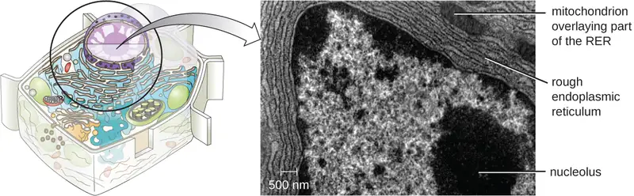
Golgi Apparatus¶
The Golgi apparatus was discovered within the endomembrane system in 1898 by Italian scientist Camillo Golgi (1843–1926), who developed a novel staining technique that showed stacked membrane structures within the cells of Plasmodium, the causative agent of malaria. The Golgi apparatus is composed of a series of membranous disks called dictyosomes, each having a single lipid bilayer, that are stacked together (Figure 3.45).
Enzymes in the Golgi apparatus modify lipids and proteins transported from the ER to the Golgi, often adding carbohydrate components to them, producing glycolipids, glycoproteins, or proteoglycans. Glycolipids and glycoproteins are often inserted into the plasma membrane and are important for signal recognition by other cells or infectious particles. Different types of cells can be distinguished from one another by the structure and arrangement of the glycolipids and glycoproteins contained in their plasma membranes. These glycolipids and glycoproteins commonly also serve as cell surface receptors.
Transport vesicles leaving the ER fuse with a Golgi apparatus on its receiving, or cis, face. The proteins are processed within the Golgi apparatus, and then additional transport vesicles containing the modified proteins and lipids pinch off from the Golgi apparatus on its outgoing, or trans, face. These outgoing vesicles move to and fuse with the plasma membrane or the membrane of other organelles.
Exocytosis is the process by which secretory vesicles (spherical membranous sacs) release their contents to the cell’s exterior (Figure 3.45). All cells have constitutive secretory pathways in which secretory vesicles transport soluble proteins that are released from the cell continually (constitutively). Certain specialized cells also have regulated secretory pathways, which are used to store soluble proteins in secretory vesicles. Regulated secretion involves substances that are only released in response to certain events or signals. For example, certain cells of the human immune system (e.g., mast cells) secrete histamine in response to the presence of foreign objects or pathogens in the body. Histamine is a compound that triggers various mechanisms used by the immune system to eliminate pathogens.
![A small diagram of the cell outlining the Golgi complex which is a series of stacked membranes in the cell. A more detailed diagram shows the stacked membranes labeled cisternae and the inner regions of the stacks labeled lumen. Small spheres on the top are show transport vesicles from ER fuse with the cis face of the golgi. Small spheres on the bottom show newly formed secretory vesicles emerging from the trans face of the golgi. A micrograph shows the golgi in the cell as a stack of lines forming a semi-circle.](img/osc-microbio-03-04-golgi.webp)
Lysosomes¶
In the 1960s, Belgian scientist Christian de Duve (1917–2013) discovered lysosomes, membrane-bound organelles of the endomembrane system that contain digestive enzymes. Certain types of eukaryotic cells use lysosomes to break down various particles, such as food, damaged organelles or cellular debris, microorganisms, or immune complexes. Compartmentalization of the digestive enzymes within the lysosome allows the cell to efficiently digest matter without harming the cytoplasmic components of the cell.
Check Your Understanding
- Name the components of the endomembrane system and describe the function of each component.
Peroxisomes¶
Christian de Duve is also credited with the discovery of peroxisomes, membrane-bound organelles that are not part of the endomembrane system (Figure 3.46). Peroxisomes form independently in the cytoplasm from the synthesis of peroxin proteins by free ribosomes and the incorporation of these peroxin proteins into existing peroxisomes. Growing peroxisomes then divide by a process similar to binary fission.
Peroxisomes were first named for their ability to produce hydrogen peroxide, a highly reactive molecule that helps to break down molecules such as uric acid, amino acids, and fatty acids. Peroxisomes also possess the enzyme catalase, which can degrade hydrogen peroxide. Along with the SER, peroxisomes also play a role in lipid biosynthesis. Like lysosomes, the compartmentalization of these degradative molecules within an organelle helps protect the cytoplasmic contents from unwanted damage.
The peroxisomes of certain organisms are specialized to meet their particular functional needs. For example, glyoxysomes are modified peroxisomes of yeasts and plant cells that perform several metabolic functions, including the production of sugar molecules. Similarly, glycosomes are modified peroxisomes made by certain trypanosomes, the pathogenic protozoans that cause Chagas disease and African sleeping sickness.
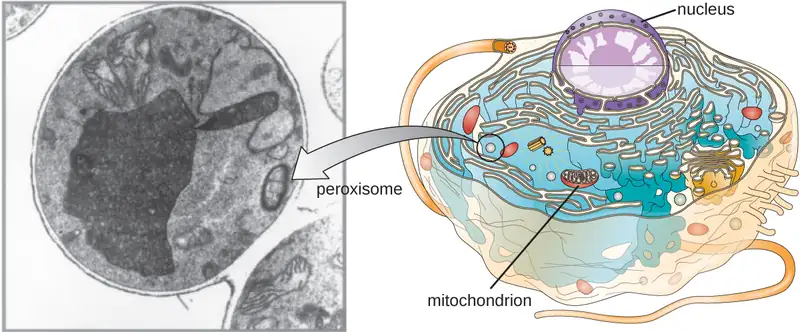
Cytoskeleton¶
Eukaryotic cells have an internal cytoskeleton made of microfilaments, intermediate filaments, and microtubules. This matrix of fibers and tubes provides structural support as well as a network over which materials can be transported within the cell and on which organelles can be anchored (Figure 3.47). For example, the process of exocytosis involves the movement of a vesicle via the cytoskeletal network to the plasma membrane, where it can release its contents.
![A micrograph shows many lines emminating from the nucleus and extending throughout the cell. These are shown in diagram form as small spheres forming the outside of a long tube. Each pair of spheres is a tubulin dimer and columns of these dimers can be seen on the outside of the large tube they form. The diameter of the tube is 25 µm. The same micrograph shows lines throughout the cell; these are drawn as spheres forming a braided structures (a double helix). The diameter of the helix is 7 nm. The spheres are labeled actin subunit. Another micrograph shows many lines forming a webbing in the cell. These are drawn as a rope; each strand of the rope is labeled fibrous subunit (keratins coiled together). The diameter of the rope is 8 – 12 nm.](img/osc-microbio-03-04-cytoskel.webp)
Microfilaments are composed of two intertwined strands of actin, each composed of actin monomers forming filamentous cables 6 nm in diameter25 (Figure 3.48). The actin filaments work together with motor proteins, like myosin, to effect muscle contraction in animals or the amoeboid movement of some eukaryotic microbes. In ameboid organisms, actin can be found in two forms: a stiffer, polymerized, gel form and a more fluid, unpolymerized soluble form. Actin in the gel form creates stability in the ectoplasm, the gel-like area of cytoplasm just inside the plasma membrane of ameboid protozoans.
Temporary extensions of the cytoplasmic membrane called pseudopodia (meaning “false feet”) are produced through the forward flow of soluble actin filaments into the pseudopodia, followed by the gel-sol cycling of the actin filaments, resulting in cell motility. Once the cytoplasm extends outward, forming a pseudopodium, the remaining cytoplasm flows up to join the leading edge, thereby creating forward locomotion. Beyond amoeboid movement, microfilaments are also involved in a variety of other processes in eukaryotic cells, including cytoplasmic streaming (the movement or circulation of cytoplasm within the cell), cleavage furrow formation during cell division, and muscle movement in animals (Figure 3.48). These functions are the result of the dynamic nature of microfilaments, which can polymerize and depolymerize relatively easily in response to cellular signals, and their interactions with molecular motors in different types of eukaryotic cells.
![a) A diagram of the plasma membrane shows the filaments of the cytoskeleton as thin lines on the cytoplasmic side of the membrane. B) A closeup of the filaments shows spheres labeled actin subunits forming into a long chain labeled actin filaments. C)examples of how actin is used in various cells. Some cells use actin for amoeboid movement. This is done when actin polymerizes and depolymerizes to allow a portion of the cell to project out, attach to a surface and pull the rest of the cell behind it. Cytoplasmic streaming is the movement of cytoplasm due to the actions of actin. Contractile ring formation during cytokinesis is when actin pinches a dividing cell off into two separate cells. Muscle contraction in animals is when actin strands are pulled together by myosin; this shortens the length of the muscle cell and contracts the muscle.](img/osc-microbio-03-04-actin.webp)
Intermediate filaments (Figure 3.49) are a diverse group of cytoskeletal filaments that act as cables within the cell. They are termed “intermediate” because their 10-nm diameter is thicker than that of actin but thinner than that of microtubules.26 They are composed of several strands of polymerized subunits that, in turn, are made up of a wide variety of monomers. Intermediate filaments tend to be more permanent in the cell and maintain the position of the nucleus. They also form the nuclear lamina (lining or layer) just inside the nuclear envelope. Additionally, intermediate filaments play a role in anchoring cells together in animal tissues. The intermediate filament protein desmin is found in desmosomes, the protein structures that join muscle cells together and help them resist external physical forces. The intermediate filament protein keratin is a structural protein found in hair, skin, and nails.
![a) Intermediate filaments are shown as a rope-like structure. B) These are found in the nuclear lamina (lamina intermediate filaments) which are just under the nuclear envelope. C) Intermediate filaments are also found in desmosomes. Desmosomes are connections between two cells (shown here as two small regions of plasma membranes next to each other. The intermediate filaments connect these two membranes together across the extracellular space. A micrograph shows these as dark lines running across the membranes between two cells.](img/osc-microbio-03-04-intfilam.webp)
Microtubules (Figure 3.50) are a third type of cytoskeletal fiber composed of tubulin dimers (α tubulin and β tubulin). These form hollow tubes 23 nm in diameter that are used as girders within the cytoskeleton.27 Like microfilaments, microtubules are dynamic and have the ability to rapidly assemble and disassemble. Microtubules also work with motor proteins (such as dynein and kinesin) to move organelles and vesicles around within the cytoplasm. Additionally, microtubules are the main components of eukaryotic flagella and cilia, composing both the filament and the basal body components (Figure 3.57).
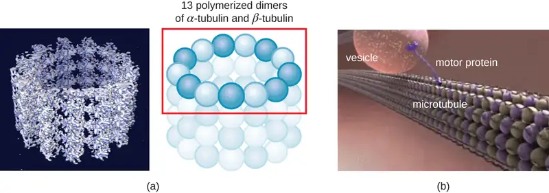
In addition, microtubules are involved in cell division, forming the mitotic spindle that serves to separate chromosomes during mitosis and meiosis. The mitotic spindle is produced by two centrosomes, which are essentially microtubule-organizing centers, at opposite ends of the cell. Each centrosome is composed of a pair of centrioles positioned at right angles to each other, and each centriole is an array of twenty-seven parallel microtubules arranged in triplets (Figure 3.51).
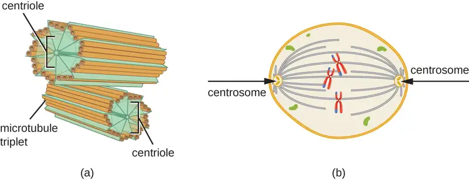
Check Your Understanding
- Compare and contrast the three types of cytoskeletal structures described in this section.
Mitochondria¶
The large, complex organelles in which aerobic cellular respiration occurs in eukaryotic cells are called mitochondria (Figure 3.52). The term “mitochondrion” was first coined by German microbiologist Carl Benda in 1898 and was later connected with the process of respiration by Otto Warburg in 1913. Scientists during the 1960s discovered that mitochondria have their own genome and 70S ribosomes. The mitochondrial genome was found to be bacterial, when it was sequenced in 1976. These findings ultimately supported the endosymbiotic theory proposed by Lynn Margulis, which states that mitochondria originally arose through an endosymbiotic event in which a bacterium capable of aerobic cellular respiration was taken up by phagocytosis into a host cell and remained as a viable intracellular component.
Each mitochondrion has two lipid membranes. The outer membrane is a remnant of the original host cell’s membrane structures. The inner membrane was derived from the bacterial plasma membrane. The electron transport chain for aerobic respiration uses integral proteins embedded in the inner membrane. The mitochondrial matrix, corresponding to the location of the original bacterium’s cytoplasm, is the current location of many metabolic enzymes. It also contains mitochondrial DNA and 70S ribosomes. Invaginations of the inner membrane, called cristae, evolved to increase surface area for the location of biochemical reactions. The folding patterns of the cristae differ among various types of eukaryotic cells and are used to distinguish different eukaryotic organisms from each other.
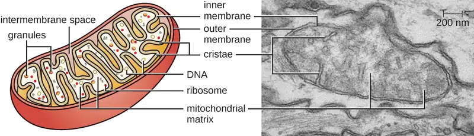
Chloroplasts¶
Plant cells and algal cells contain chloroplasts, the organelles in which photosynthesis occurs (Figure 3.53). All chloroplasts have at least three membrane systems: the outer membrane, the inner membrane, and the thylakoid membrane system. Inside the outer and inner membranes is the chloroplast stroma, a gel-like fluid that makes up much of a chloroplast’s volume, and in which the thylakoid system floats. The thylakoid system is a highly dynamic collection of folded membrane sacs. It is where the green photosynthetic pigment chlorophyll is found and the light reactions of photosynthesis occur. In most plant chloroplasts, the thylakoids are arranged in stacks called grana (singular: granum), whereas in some algal chloroplasts, the thylakoids are free floating.
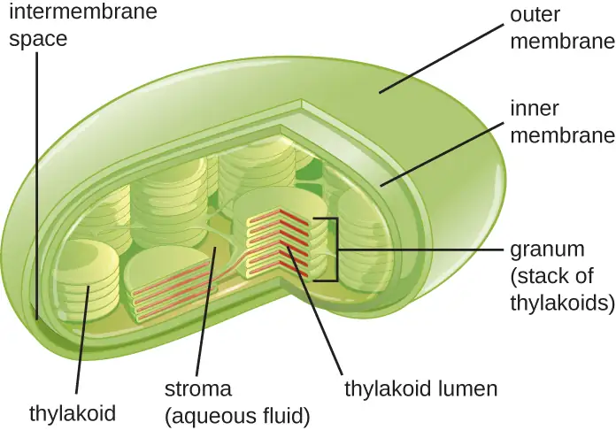
Other organelles similar to mitochondria have arisen in other types of eukaryotes, but their roles differ. Hydrogenosomes are found in some anaerobic eukaryotes and serve as the location of anaerobic hydrogen production. Hydrogenosomes typically lack their own DNA and ribosomes. Kinetoplasts are a variation of the mitochondria found in some eukaryotic pathogens. In these organisms, each cell has a single, long, branched mitochondrion in which kinetoplast DNA, organized as multiple circular pieces of DNA, is found concentrated at one pole of the cell.
Micro Connections: Mitochondria-Related Organelles in Protozoan Parasites
Many protozoans, including several protozoan parasites that cause infections in humans, can be identified by their unusual appearance. Distinguishing features may include complex cell morphologies, the presence of unique organelles, or the absence of common organelles. The protozoan parasites Giardia lamblia and Trichomonas vaginalis are two examples.
G. lamblia, a frequent cause of diarrhea in humans and many other animals, is an anaerobic parasite that possesses two nuclei and several flagella. Its Golgi apparatus and endoplasmic reticulum are greatly reduced, and it lacks mitochondria completely. However, it does have organelles known as mitosomes, double-membrane-bound organelles that appear to be severely reduced mitochondria. This has led scientists to believe that G. lamblia’s ancestors once possessed mitochondria that evolved to become mitosomes. T. vaginalis, which causes the sexually transmitted infection vaginitis, is another protozoan parasite that lacks conventional mitochondria. Instead, it possesses hydrogenosomes, mitochondrial-related, double-membrane-bound organelles that produce molecular hydrogen used in cellular metabolism. Scientists believe that hydrogenosomes, like mitosomes, also evolved from mitochondria.28
Plasma Membrane¶
The plasma membrane of eukaryotic cells is similar in structure to the prokaryotic plasma membrane in that it is composed mainly of phospholipids forming a bilayer with embedded peripheral and integral proteins (Figure 3.54). These membrane components move within the plane of the membrane according to the fluid mosaic model. However, unlike the prokaryotic membrane, eukaryotic membranes contain sterols, including cholesterol, that alter membrane fluidity. Additionally, many eukaryotic cells contain some specialized lipids, including sphingolipids, which are thought to play a role in maintaining membrane stability as well as being involved in signal transduction pathways and cell-to-cell communication.
![A drawing of the plasma membrane. The top of the diagram is labeled outside of cell, the bottom is labeled cytoplasm. Separating these two regions is the membrane which is made of mostly a phospholipid bilayer. Each phospholipid is drawn as a sphere with 2 tails. There are two layers of phospholipids making up the bilayer; each phospholipid layer has the sphere towards the outside of the bilayer and the two tails towards the inside of the bilayer. Embedded within the phospholipid bilayer are a variety of large proteins. Glycolipids have long carbohydrate chains (shown as a chain of hexagons) attached to a single phospholipid; the carbohydrates are always on the outside of the membrane. Glycoproteins have a long carbohydrate chain attached to a protein; the carbohydrates are on the outside of the membrane. The cytoskeleton is shown as a thin layer of line just under the inside of the phospholipid bilayer.](img/osc-microbio-03-04-eukplasmem.webp)
Membrane Transport Mechanisms¶
The processes of simple diffusion, facilitated diffusion, and active transport are used in both eukaryotic and prokaryotic cells. However, eukaryotic cells also have the unique ability to perform various types of endocytosis, the uptake of matter through plasma membrane invagination and vacuole/vesicle formation (Figure 3.55). A type of endocytosis involving the engulfment of large particles through membrane invagination is called phagocytosis, which means “cell eating.” In phagocytosis, particles (or other cells) are enclosed in a pocket within the membrane, which then pinches off from the membrane to form a vacuole that completely surrounds the particle. Another type of endocytosis is called pinocytosis, which means “cell drinking.” In pinocytosis, small, dissolved materials and liquids are taken into the cell through small vesicles. Saprophytic fungi, for example, obtain their nutrients from dead and decaying matter largely through pinocytosis.
Receptor-mediated endocytosis is a type of endocytosis that is initiated by specific molecules called ligands when they bind to cell surface receptors on the membrane. Receptor-mediated endocytosis is the mechanism that peptide and amine-derived hormones use to enter cells and is also used by various viruses and bacteria for entry into host cells.
![a) Phagocytosis. A large particle outside of the cell is engulfed by a folding of the plasma membrane. This folding continues until the large particle is fully wrapped in a vacuole and is taken into the cell. b) Pinocytosis. Small particles are taken in through infoldings of the membrane. The membrane folds to form a vesicle that brings the small particles into the cell. Receptor-mediated endocytosis. Particles such as sugars bind to receptors on the membrane. The membrane then folds inward to form a coated vesicle. Inside this vesicle are the receptors still bound to the sugar.](img/osc-microbio-03-04-endocytos.webp)
The process by which secretory vesicles release their contents to the cell’s exterior is called exocytosis. Vesicles move toward the plasma membrane and then meld with the membrane, ejecting their contents out of the cell. Exocytosis is used by cells to remove waste products and may also be used to release chemical signals that can be taken up by other cells.
Cell Wall¶
In addition to a plasma membrane, some eukaryotic cells have a cell wall. Cells of fungi, algae, plants, and even some protists have cell walls. Depending upon the type of eukaryotic cell, cell walls can be made of a wide range of materials, including cellulose (plants); biogenic silica, calcium carbonate, agar, and carrageenan (protists and algae); or chitin (fungi). In general, all cell walls provide structural stability for the cell and protection from environmental stresses such as desiccation, changes in osmotic pressure, and traumatic injury.29
Extracellular Matrix¶
Cells of animals and some protozoans do not have cell walls to help maintain shape and provide structural stability. Instead, these types of eukaryotic cells produce an extracellular matrix for this purpose. They secrete a sticky mass of carbohydrates and proteins into the spaces between adjacent cells (Figure 3.56). Some protein components assemble into a basement membrane to which the remaining extracellular matrix components adhere. Proteoglycans typically form the bulky mass of the extracellular matrix while fibrous proteins, like collagen, provide strength. Both proteoglycans and collagen are attached to fibronectin proteins, which, in turn, are attached to integrin proteins. These integrin proteins interact with transmembrane proteins in the plasma membranes of eukaryotic cells that lack cell walls.
In animal cells, the extracellular matrix allows cells within tissues to withstand external stresses and transmits signals from the outside of the cell to the inside. The amount of extracellular matrix is quite extensive in various types of connective tissues, and variations in the extracellular matrix can give different types of tissues their distinct properties. In addition, a host cell’s extracellular matrix is often the site where microbial pathogens attach themselves to establish infection. For example, Streptococcus pyogenes, the bacterium that causes strep throat and various other infections, binds to fibronectin in the extracellular matrix of the cells lining the oropharynx (upper region of the throat).
![A drawing of the plasma membrane with proteins shown in the membrane. One of these proteins is labeled integrin. Attached to this and other proteins are long strands made of a chain of hexagons labeled polysaccharides. Branches off this chain of hexagons are labeled proteins and branches of the proteins are labeled carbohydrates. These proteoglycan complexes (made of polysaccharides, proteins, and carbohydrates) are attached to proteins in the membranes via fibronectins. Larger chains on the outside of the membrane are not visibly attached to the membrane and are labeled collagen fibers. Smaller chains on the inside surface of the membrane are labeled microfilaments of cytoskeleton.](img/osc-microbio-03-04-ecm.webp)
Flagella and Cilia¶
Some eukaryotic cells use flagella for locomotion; however, eukaryotic flagella are structurally distinct from those found in prokaryotic cells. Whereas the prokaryotic flagellum is a stiff, rotating structure, a eukaryotic flagellum is more like a flexible whip composed of nine parallel pairs of microtubules surrounding a central pair of microtubules. This arrangement is referred to as a 9+2 array (Figure 3.57). The parallel microtubules use dynein motor proteins to move relative to each other, causing the flagellum to bend.
Cilia (singular: cilium) are a similar external structure found in some eukaryotic cells. Unique to eukaryotes, cilia are shorter than flagella and often cover the entire surface of a cell; however, they are structurally similar to flagella (a 9+2 array of microtubules) and use the same mechanism for movement. A structure called a basal body is found at the base of each cilium and flagellum. The basal body, which attaches the cilium or flagellum to the cell, is composed of an array of triplet microtubules similar to that of a centriole but embedded in the plasma membrane. Because of their shorter length, cilia use a rapid, flexible, waving motion. In addition to motility, cilia may have other functions such as sweeping particles past or into cells. For example, ciliated protozoans use the sweeping of cilia to move food particles into their mouthparts, and ciliated cells in the mammalian respiratory tract beat in synchrony to sweep mucus and debris up and out of the lungs (Figure 3.57).
![a) A micrograph of a cross section of a flagellum showing a ring of 9 sets of structures that are made of smaller rings. In the center are two more complete smaller rings. B) A micrograph showing a flagellum. This shows a star shaped structure in the cell attached to the long lines that make up the filament of the flagellum. A diagram shows the triplet centriole in the cell as part of the basal body that attaches the filament to the cell. The diagram also shows a cross section of the filament. The outer ring is made of 9 sets of the following: a ring labeled subfiber A, a ring labeled subfiber B, a projection labeled radial spoke with a small end labeled spoke head, a projection towards the center labeled inner dynein, and a projection towards the outside labeled outer dynein. Each of these 9 sets are connected to the ones next to it via a line called nexin. These 9 sets form a ring; in the center of this ring are 2 small circles labeled central singlet microtubule. These two are attached to each other by a line labeled central bridge. C) A cell with flagella on either end. D) A cell with many small cilia along the outside and an indentation labeled mouth.](img/osc-microbio-03-04-flagellum.webp)
Check Your Understanding
- Explain how the cellular envelope of eukaryotic cells compares to that of prokaryotic cells.
- Explain the difference between eukaryotic and prokaryotic flagella.
Clinical Focus: Resolution
Since amoxicillin has not resolved Barbara’s case of pneumonia, the PA prescribes another antibiotic, azithromycin, which targets bacterial ribosomes rather than peptidoglycan. After taking the azithromycin as directed, Barbara’s symptoms resolve and she finally begins to feel like herself again. Presuming no drug resistance to amoxicillin was involved, and given the effectiveness of azithromycin, the causative agent of Barbara’s pneumonia is most likely Mycoplasma pneumoniae. Even though this bacterium is a prokaryotic cell, it is not inhibited by amoxicillin because it does not have a cell wall and, therefore, does not make peptidoglycan.
Go back to the previous Clinical Focus box.
Chapter Review¶
Key Concepts and Summary¶
3.1 Spontaneous Generation¶
- The theory of spontaneous generation states that life arose from nonliving matter. It was a long-held belief dating back to Aristotle and the ancient Greeks.
- Experimentation by Francesco Redi in the 17th century presented the first significant evidence refuting spontaneous generation by showing that flies must have access to meat for maggots to develop on the meat. Prominent scientists designed experiments and argued both in support of (John Needham) and against (Lazzaro Spallanzani) spontaneous generation.
- Louis Pasteur is credited with conclusively disproving the theory of spontaneous generation with his famous swan-neck flask experiment. He subsequently proposed that “life only comes from life.”
3.2 Foundations of Modern Cell Theory¶
- Although cells were first observed in the 1660s by Robert Hooke, cell theory was not well accepted for another 200 years. The work of scientists such as Schleiden, Schwann, Remak, and Virchow contributed to its acceptance.
- Endosymbiotic theory states that mitochondria and chloroplasts, organelles found in many types of organisms, have their origins in bacteria. Significant structural and genetic information support this theory.
- The miasma theory of disease was widely accepted until the 19th century, when it was replaced by the germ theory of disease thanks to the work of Semmelweis, Snow, Pasteur, Lister, and Koch, and others.
3.3 Unique Characteristics of Prokaryotic Cells¶
- Prokaryotic cells differ from eukaryotic cells in that their genetic material is contained in a nucleoid rather than a membrane-bound nucleus. In addition, prokaryotic cells generally lack membrane-bound organelles.
- Prokaryotic cells of the same species typically share a similar cell morphology and cellular arrangement.
- Most prokaryotic cells have a cell wall that helps the organism maintain cellular morphology and protects it against changes in osmotic pressure.
- Outside of the nucleoid, prokaryotic cells may contain extrachromosomal DNA in plasmids.
- Prokaryotic ribosomes that are found in the cytoplasm have a size of 70S.
- Some prokaryotic cells have inclusions that store nutrients or chemicals for other uses.
- Some prokaryotic cells are able to form endospores through sporulation to survive in a dormant state when conditions are unfavorable. Endospores can germinate, transforming back into vegetative cells when conditions improve.
- In prokaryotic cells, the cell envelope includes a plasma membrane and usually a cell wall.
- Bacterial membranes are composed of phospholipids with integral or peripheral proteins. The fatty acid components of these phospholipids are ester-linked and are often used to identify specific types of bacteria. The proteins serve a variety of functions, including transport, cell-to-cell communication, and sensing environmental conditions. Archaeal membranes are distinct in that they are composed of fatty acids that are ether-linked to phospholipids.
- Some molecules can move across the bacterial membrane by simple diffusion, but most large molecules must be actively transported through membrane structures using cellular energy.
- Prokaryotic cell walls may be composed of peptidoglycan (bacteria) or pseudopeptidoglycan (archaea).
- Gram-positive bacterial cells are characterized by a thick peptidoglycan layer, whereas gram-negative bacterial cells are characterized by a thin peptidoglycan layer surrounded by an outer membrane.
- Some prokaryotic cells produce glycocalyx coatings, such as capsules and slime layers, that aid in attachment to surfaces and/or evasion of the host immune system.
- Some prokaryotic cells have fimbriae or pili, filamentous appendages that aid in attachment to surfaces. Pili are also used in the transfer of genetic material between cells.
- Some prokaryotic cells use one or more flagella to move through water. Peritrichous bacteria, which have numerous flagella, use runs and tumbles to move purposefully in the direction of a chemical attractant.
3.4 Unique Characteristics of Eukaryotic Cells¶
- Eukaryotic cells are defined by the presence of a nucleus containing the DNA genome and bound by a nuclear membrane (or nuclear envelope) composed of two lipid bilayers that regulate transport of materials into and out of the nucleus through nuclear pores.
- Eukaryotic cell morphologies vary greatly and may be maintained by various structures, including the cytoskeleton, the cell membrane, and/or the cell wall
- The nucleolus, located in the nucleus of eukaryotic cells, is the site of ribosomal synthesis and the first stages of ribosome assembly.
- Eukaryotic cells contain 80S ribosomes in the rough endoplasmic reticulum (membrane bound-ribosomes) and cytoplasm (free ribosomes). They contain 70s ribosomes in mitochondria and chloroplasts.
- Eukaryotic cells have evolved an endomembrane system, containing membrane-bound organelles involved in transport. These include vesicles, the endoplasmic reticulum, and the Golgi apparatus.
- The smooth endoplasmic reticulum plays a role in lipid biosynthesis, carbohydrate metabolism, and detoxification of toxic compounds. The rough endoplasmic reticulum contains membrane-bound 80S ribosomes that synthesize proteins destined for the cell membrane
- The Golgi apparatus processes proteins and lipids, typically through the addition of sugar molecules, producing glycoproteins or glycolipids, components of the plasma membrane that are used in cell-to-cell communication.
- Lysosomes contain digestive enzymes that break down small particles ingested by endocytosis, large particles or cells ingested by phagocytosis, and damaged intracellular components.
- The cytoskeleton, composed of microfilaments, intermediate filaments, and microtubules, provides structural support in eukaryotic cells and serves as a network for transport of intracellular materials.
- Centrosomes are microtubule-organizing centers important in the formation of the mitotic spindle in mitosis.
- Mitochondria are the site of cellular respiration. They have two membranes: an outer membrane and an inner membrane with cristae. The mitochondrial matrix, within the inner membrane, contains the mitochondrial DNA, 70S ribosomes, and metabolic enzymes.
- The plasma membrane of eukaryotic cells is structurally similar to that found in prokaryotic cells, and membrane components move according to the fluid mosaic model. However, eukaryotic membranes contain sterols, which alter membrane fluidity, as well as glycoproteins and glycolipids, which help the cell recognize other cells and infectious particles.
- In addition to active transport and passive transport, eukaryotic cell membranes can take material into the cell via endocytosis, or expel matter from the cell via exocytosis.
- Cells of fungi, algae, plants, and some protists have a cell wall, whereas cells of animals and some protozoans have a sticky extracellular matrix that provides structural support and mediates cellular signaling.
- Eukaryotic flagella are structurally distinct from prokaryotic flagella but serve a similar purpose (locomotion). Cilia are structurally similar to eukaryotic flagella, but shorter; they may be used for locomotion, feeding, or movement of extracellular particles.
Multiple Choice¶
3.1 Spontaneous Generation¶
1. Which of the following individuals argued in favor of the theory of spontaneous generation?
- Francesco Redi
- Louis Pasteur
- John Needham
- Lazzaro Spallanzani
Answer
C
2. Which of the following individuals is credited for definitively refuting the theory of spontaneous generation using broth in swan-neck flask?
- Aristotle
- Jan Baptista van Helmont
- John Needham
- Louis Pasteur
Answer
D
3. Which of the following scientists experimented with raw meat, maggots, and flies in an attempt to disprove the theory of spontaneous generation?
- Aristotle
- Lazzaro Spallanzani
- Antonie van Leeuwenhoek
- Francesco Redi
Answer
D
3.2 Foundations of Modern Cell Theory¶
4. Which of the following individuals did not contribute to the establishment of cell theory?
- Girolamo Fracastoro
- Matthias Schleiden
- Robert Remak
- Robert Hooke
Answer
A
5. Whose proposal of the endosymbiotic theory of mitochondrial and chloroplast origin was ultimately accepted by the greater scientific community?
- Rudolf Virchow
- Ignaz Semmelweis
- Lynn Margulis
- Theodor Schwann
Answer
C
6. Which of the following developed a set of postulates for determining whether a particular disease is caused by a particular pathogen?
- John Snow
- Robert Koch
- Joseph Lister
- Louis Pasteur
Answer
B
3.3 Unique Characteristics of Prokaryotic Cells¶
7. Which of the following terms refers to a prokaryotic cell that is comma shaped?
- coccus
- coccobacilli
- vibrio
- spirillum
Answer
C
8. Which bacterial structures are important for adherence to surfaces? (Select all that apply.)
- endospores
- cell walls
- fimbriae
- capsules
- flagella
Answer
C, D
9. Which of the following cell wall components is unique to gram-negative cells?
- lipopolysaccharide
- teichoic acid
- mycolic acid
- peptidoglycan
Answer
A
10. Which of the following terms refers to a bacterial cell having a single tuft of flagella at one end?
- monotrichous
- amphitrichous
- peritrichous
- lophotrichous
Answer
D
11. Bacterial cell walls are primarily composed of which of the following?
- phospholipid
- protein
- carbohydrate
- peptidoglycan
Answer
D
3.4 Unique Characteristics of Eukaryotic Cells¶
12. Which of the following organelles is not part of the endomembrane system?
- endoplasmic reticulum
- Golgi apparatus
- lysosome
- peroxisome
Answer
D
13. Which type of cytoskeletal fiber is important in the formation of the nuclear lamina?
- microfilaments
- intermediate filaments
- microtubules
- fibronectin
Answer
B
14. Sugar groups may be added to proteins in which of the following?
- smooth endoplasmic reticulum
- rough endoplasmic reticulum
- Golgi apparatus
- lysosome
Answer
C
15. Which of the following structures of a eukaryotic cell is not likely derived from endosymbiotic bacterium?
- mitochondrial DNA
- mitochondrial ribosomes
- inner membrane
- outer membrane
Answer
D
16. Which type of nutrient uptake involves the engulfment of small dissolved molecules into vesicles?
- active transport
- pinocytosis
- receptor-mediated endocytosis
- facilitated diffusion
Answer
B
17. Which of the following is not composed of microtubules?
- desmosomes
- centrioles
- eukaryotic flagella
- eukaryotic cilia
Answer
A
Fill in the Blank¶
3.1 Spontaneous Generation¶
18. The assertion that “life only comes from life” was stated by Louis Pasteur in regard to his experiments that definitively refuted the theory of ___________.
Answer
spontaneous generation
3.2 Foundations of Modern Cell Theory¶
19. John Snow is known as the Father of _____________.
Answer
epidemiology
20. The ____________ theory states that disease may originate from proximity to decomposing matter and is not due to person-to-person contact.
Answer
miasma
21. The scientist who first described cells was _____________.
Answer
Robert Hooke
3.3 Unique Characteristics of Prokaryotic Cells¶
22. Prokaryotic cells that are rod-shaped are called _____________.
Answer
bacilli
23. The type of inclusion containing polymerized inorganic phosphate is called _____________.
Answer
volutin (or metachromatic granule)
3.4 Unique Characteristics of Eukaryotic Cells¶
24. Peroxisomes typically produce _____________, a harsh chemical that helps break down molecules.
Answer
hydrogen peroxide
25. Microfilaments are composed of _____________ monomers.
Answer
actin
True/False¶
3.1 Spontaneous Generation¶
26. Exposure to air is necessary for microbial growth.
Answer
False
3.3 Unique Characteristics of Prokaryotic Cells¶
27. Bacteria have 80S ribosomes each composed of a 60S large subunit and a 40S small subunit.
Answer
False
3.4 Unique Characteristics of Eukaryotic Cells¶
28. Mitochondria in eukaryotic cells contain ribosomes that are structurally similar to those found in prokaryotic cells.
Answer
True
Short Answer¶
3.1 Spontaneous Generation¶
29. Explain in your own words Pasteur’s swan-neck flask experiment.
30. Explain why the experiments of Needham and Spallanzani yielded in different results even though they used similar methodologies.
3.2 Foundations of Modern Cell Theory¶
31. How did the explanation of Virchow and Remak for the origin of cells differ from that of Schleiden and Schwann?
32. What evidence exists that supports the endosymbiotic theory?
33. What were the differences in mortality rates due to puerperal fever that Ignaz Semmelweis observed? How did he propose to reduce the occurrence of puerperal fever? Did it work?
3.3 Unique Characteristics of Prokaryotic Cells¶
34. What is the direction of water flow for a bacterial cell living in a hypotonic environment? How do cell walls help bacteria living in such environments?
35. How do bacterial flagella respond to a chemical gradient of an attractant to move toward a higher concentration of the chemical?
36. Label the parts of the prokaryotic cell.
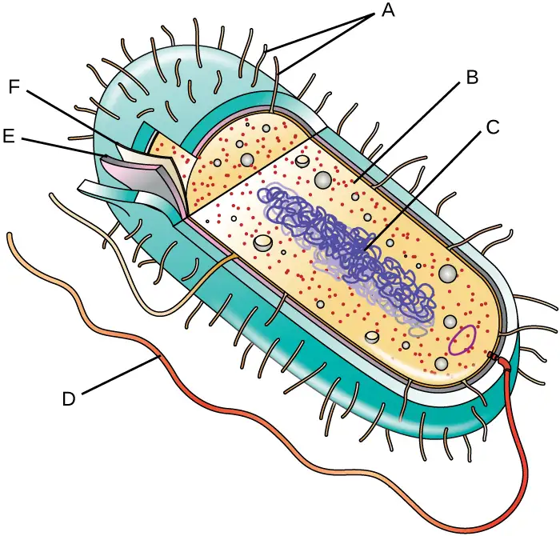
3.4 Unique Characteristics of Eukaryotic Cells¶
37. What existing evidence supports the theory that mitochondria are of prokaryotic origin?
38. Why do eukaryotic cells require an endomembrane system?
39. Name at least two ways that prokaryotic flagella are different from eukaryotic flagella.
Critical Thinking¶
3.1 Spontaneous Generation¶
40. What would the results of Pasteur’s swan-neck flask experiment have looked like if they supported the theory of spontaneous generation?
3.2 Foundations of Modern Cell Theory¶
41. Why are mitochondria and chloroplasts unable to multiply outside of a host cell?
42. Why was the work of Snow so important in supporting the germ theory?
3.3 Unique Characteristics of Prokaryotic Cells¶
43. Which of the following slides is a good example of staphylococci?
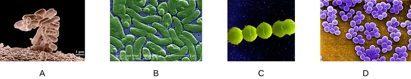
44. Provide some examples of bacterial structures that might be used as antibiotic targets and explain why.
45. The causative agent of botulism, a deadly form of food poisoning, is an endospore-forming bacterium called Clostridium botulinum. Why might it be difficult to kill this bacterium in contaminated food?
3.4 Unique Characteristics of Eukaryotic Cells¶
46. Label the lettered parts of this eukaryotic cell.
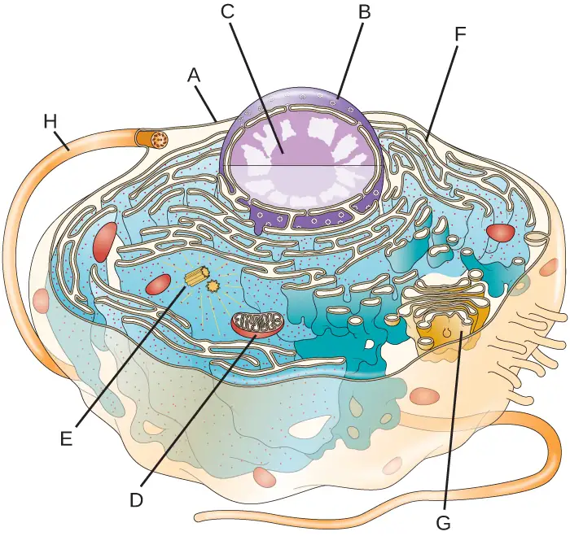
47. How are peroxisomes more like mitochondria than like the membrane-bound organelles of the endomembrane system? How do they differ from mitochondria?
48. Why must the functions of both lysosomes and peroxisomes be compartmentalized?
Adapted from Microbiology by OpenStax, licensed under CC BY 4.0. Access the original for free at openstax.org. Changes: converted to the web reading format of The Open Book Project.
-
K. Zwier. “Aristotle on Spontaneous Generation.” http://www.sju.edu/int/academics/cas/resources/gppc/pdf/Karen%20R.%20Zwier.pdf ↩
-
E. Capanna. “Lazzaro Spallanzani: At the Roots of Modern Biology.” Journal of Experimental Zoology 285 no. 3 (1999):178–196. ↩
-
R. Mancini, M. Nigro, G. Ippolito. “Lazzaro Spallanzani and His Refutation of the Theory of Spontaneous Generation.” Le Infezioni in Medicina 15 no. 3 (2007):199–206. ↩
-
R. Vallery-Radot. The Life of Pasteur, trans. R.L. Devonshire. New York: McClure, Phillips and Co, 1902, 1:142. ↩
-
M. Schultz. “Rudolph Virchow.” Emerging Infectious Diseases 14 no. 9 (2008):1480–1481. ↩
-
B. Kisch. “Forgotten Leaders in Modern Medicine, Valentin, Gouby, Remak, Auerbach.” Transactions of the American Philosophical Society 44 (1954):139–317. ↩
-
H. Harris. The Birth of the Cell. New Haven, CT: Yale University Press, 2000:133. ↩
-
C. Webster (ed.). Biology, Medicine and Society 1840-1940. Cambridge, UK; Cambridge University Press, 1981:118–119. ↩
-
C. Zuchora-Walske. Key Discoveries in Life Science. Minneapolis, MN: Lerner Publishing, 2015:12–13. ↩
-
T. Embley, W. Martin. “Eukaryotic Evolution, Changes, and Challenges.” Nature Vol. 440 (2006):623–630. ↩
-
O.G. Berg, C.G. Kurland. “Why Mitochondrial Genes Are Most Often Found in Nuclei.” Molecular Biology and Evolution 17 no. 6 (2000):951–961. ↩
-
L. Sagan. “On the Origin of Mitosing Cells.” Journal of Theoretical Biology 14 no. 3 (1967):225–274. ↩
-
A.E. Douglas. “The Microbial Dimension in Insect Nutritional Ecology.” Functional Ecology 23 (2009):38–47. ↩
-
J.M. Jaynes, L.P. Vernon. “The Cyanelle of Cyanophora paradoxa: Almost a Cyanobacterial Chloroplast.” Trends in Biochemical Sciences 7 no. 1 (1982):22–24. ↩
-
Alexander, J. Wesley. “The Contributions of Infection Control to a Century of Progress” Annals of Surgery 201:423-428, 1985. ↩
-
Y.-H.M. Chan, W.F. Marshall. “Scaling Properties of Cell and Organelle Size.” Organogenesis 6 no. 2 (2010):88–96. ↩
-
F. Rothfuss, M Bender, R Conrad. “Survival and Activity of Bacteria in a Deep, Aged Lake Sediment (Lake Constance).” Microbial Ecology 33 no. 1 (1997):69–77. ↩
-
R. Sinclair et al. “Persistence of Category A Select Agents in the Environment.” Applied and Environmental Microbiology 74 no. 3 (2008):555–563. ↩
-
T.J. Silhavy, D. Kahne, S. Walker. “The Bacterial Cell Envelope.” Cold Spring Harbor Perspectives in Biology 2 no. 5 (2010):a000414. ↩
-
B. Zuber et al. “Granular Layer in the Periplasmic Space of Gram-Positive Bacteria and Fine Structures of Enterococcus gallinarum and Streptococcus gordonii Septa Revealed by Cryo-Electron Microscopy of Vitreous Sections.” Journal of Bacteriology 188 no. 18 (2006):6652–6660 ↩
-
L. Gana, S. Chena, G.J. Jensena. “Molecular Organization of Gram-Negative Peptidoglycan.” Proceedings of the National Academy of Sciences of the United States of America 105 no. 48 (2008):18953–18957. ↩
-
J.A. Garnetta et al. “Structural Insights Into the Biogenesis and Biofilm Formation by the Escherichia coli Common Pilus.” Proceedings of the National Academy of Sciences of the United States of America 109 no. 10 (2012):3950–3955. ↩
-
T. Proft, E.N. Baker. “Pili in Gram-Negative and Gram-Positive Bacteria—Structure, Assembly and Their Role in Disease.” Cellular and Molecular Life Sciences 66 (2009):613. ↩
-
A.E. Barnhill, M.T. Brewer, S.A. Carlson. “Adverse Effects of Antimicrobials via Predictable or Idiosyncratic Inhibition of Host Mitochondrial Components.” Antimicrobial Agents and Chemotherapy 56 no. 8 (2012):4046–4051. ↩
-
Fuchs E, Cleveland DW. “A Structural Scaffolding of Intermediate Filaments in Health and Disease.” Science 279 no. 5350 (1998):514–519. ↩
-
E. Fuchs, D.W. Cleveland. “A Structural Scaffolding of Intermediate Filaments in Health and Disease.” Science 279 no. 5350 (1998):514–519. ↩
-
E. Fuchs, D.W. Cleveland. “A Structural Scaffolding of Intermediate Filaments in Health and Disease.” Science 279 no. 5350 (1998):514–519. ↩
-
N. Yarlett, J.H.P. Hackstein. “Hydrogenosomes: One Organelle, Multiple Origins.” BioScience 55 no. 8 (2005):657–658. ↩
-
M. Dudzick. “Protists.” OpenStax CNX. November 27, 2013. http://cnx.org/contents/f7048bb6-e462-459b-805c-ef291cf7049c@1 ↩